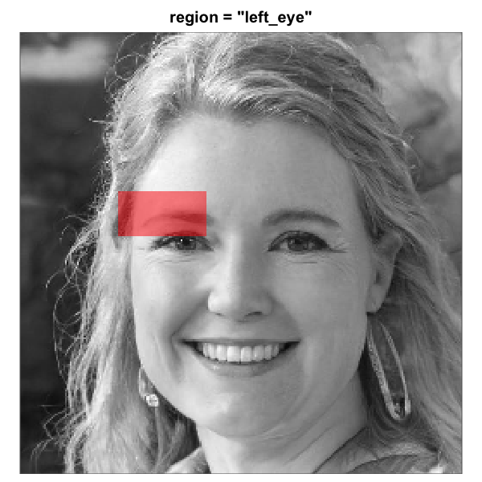
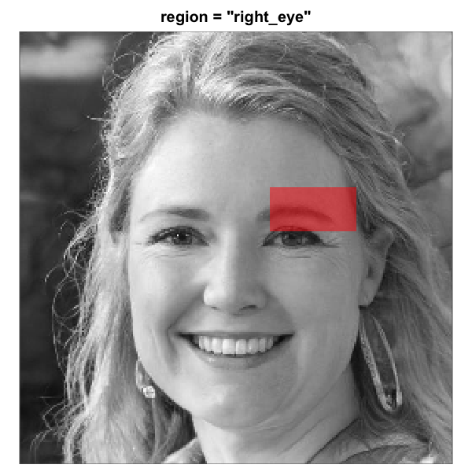
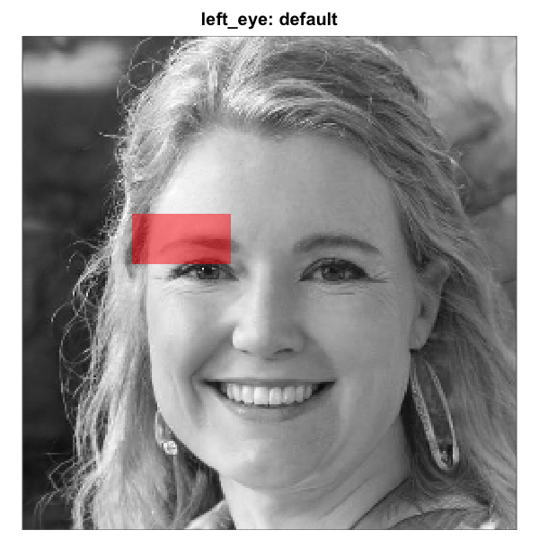
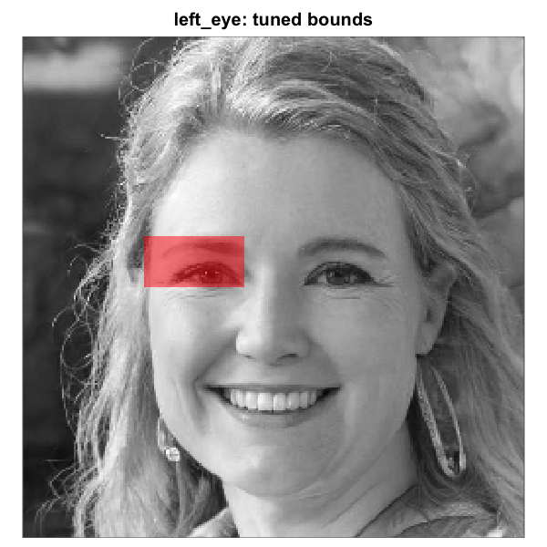
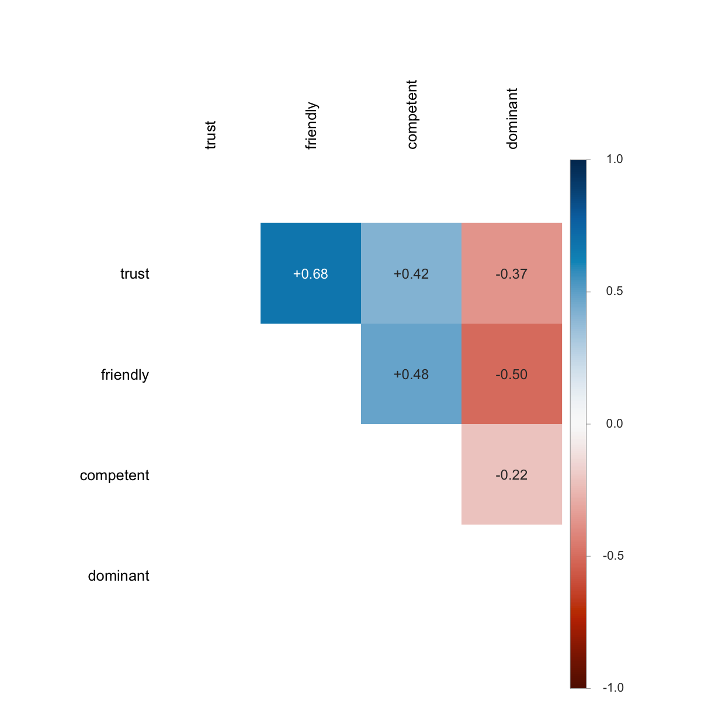
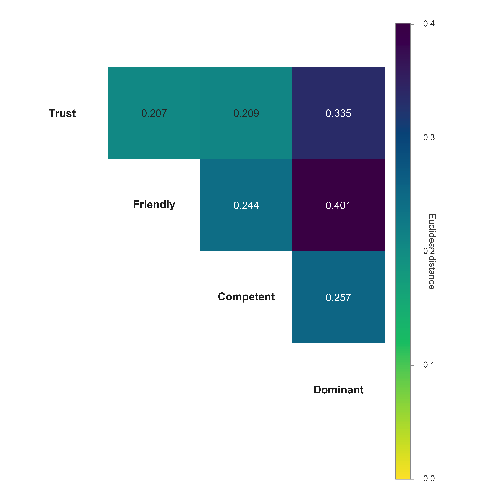
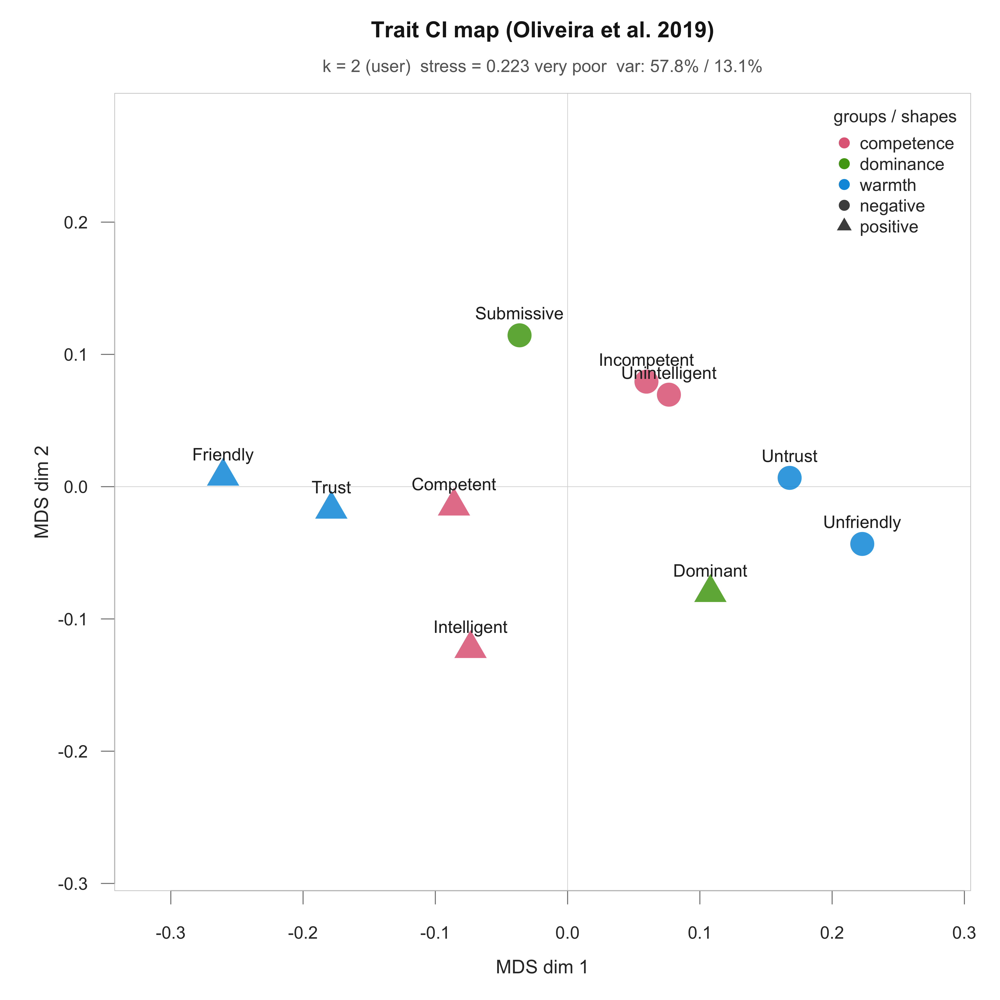
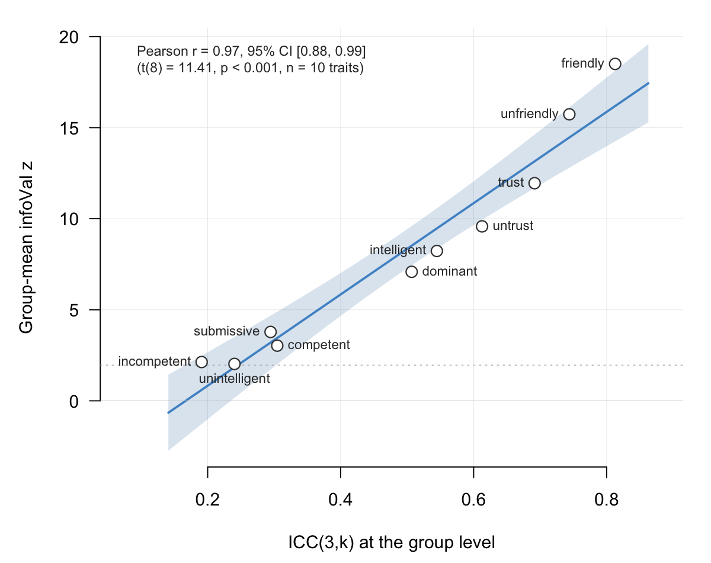

1. Overview
rcisignal is a toolkit for examining the data quality of
reverse-correlation (RC) experiments and for triangulating any signal
captured in the dataset (e.g., a hypothesized mental representation of a
friendly face). It addresses three questions, in order. First, are the
inputs clean (response coding, trial counts, response bias,
stimulus-pool alignment)? Second, is the signal informative and stable
(does each condition’s group CI carry more pattern than chance, and
would the pattern replicate on a different half of the producers)?
Third, when there is more than one condition, are the conditions
distinguishable, both in overall magnitude and in spatial location?
Two halves of the package address these questions in turn. The
input-side diagnostics (run_diagnostics() and the
check_* family, plus infoval_report() for the
focused “is my data informative at all?” summary) cover the first
question. The output-side reliability and discriminability metrics
(run_reliability(), run_discriminability(),
infoval(), agreement_map_test(), together with
the lower-level building blocks rel_*() and
pixel_t_test()) cover the second and third.
1.1 Scope
For 2IFC stimulus generation and CI computation,
rcisignal delegates to the upstream rcicr package
(Dotsch, 2016, 2023). ci_from_responses_2ifc() is a small
convenience function around rcicr::batchGenerateCI2IFC()
that takes care of the integration quirks. Brief-RC support (Schmitz,
Rougier, & Yzerbyt, 2024) is provided directly by rcisignal via
ci_from_responses_briefrc().
The metrics in this package quantify whether a CI is stable (within-condition) and separable (between-condition). Whether the CI accurately reflects the producer’s mental representation of the target trait is a separate validity question, typically addressed by an external rater study, and sits outside the package. Cone, Brown-Iannuzzi, Lei, & Dotsch (2021) showed that the standard two-phase rating design inflates Type I error; rcisignal’s metrics operate directly on producer-level pixel signal and thereby sidestep that pitfall.
The intended audience is RC researchers at an intermediate R level
with basic familiarity with the rcicr package or with the
Schmitz et al. (2024) Brief-RC structure. No prior expertise in
data.table, permutation testing, or intraclass correlation
is assumed.
1.2 Validation status
Worth flagging before any published use of this package: not all of the metrics it ships are independently validated for social-face RC data. The package is best treated as a toolbox that collects existing methods, plus a few natural extensions of those methods, into one place. Some of those extensions are mature and well-grounded in adjacent literatures; others are sensible-looking implementations that have not yet had a dedicated validation study on the kind of data this package targets. Reporting accordingly matters.
Validated in their respective domains:
-
Per-producer infoVal for 2IFC (Brinkman et al.,
2019). The Frobenius-norm magnitude statistic, its modified-z
formulation against a random-responder reference distribution, and the
Type-I/power validation on social-face 2IFC data all originate from the
Brinkman et al. paper. (The reporting threshold itself,
z >= 1.96, is the conventional standard-normal cutoff that Brinkman et al. adopt: a one-sided 2.5%, equivalently two-sided 5%, error rate.) -
Pixel-test methodology (Chauvin et al., 2005). The
per-pixel inferential test on smooth classification images — and the
cluster-level companion — are well-established in the
classification-image and neuroimaging literatures. Chauvin et al. use a
per-pixel Z-statistic on the noise-response correlation calibrated by
Random Field Theory;
rcisignaladapts the same logic to the per-producer signal matrix and calibrates instead by sign-flip permutation (see §12.1). - Cluster-based permutation tests for FWER control (Maris & Oostenveld, 2007). Validated on EEG and MEG data, with the underlying logic carrying over to any spatial statistical map.
- Threshold-free cluster enhancement (TFCE) (Smith & Nichols, 2009). Validated on neuroimaging data; same transferability caveat as above.
Package-level extensions, not yet independently validated for face evaluation RC:
- Group-mean infoVal. A natural extension of per-producer infoVal to the group-average CI, with a trial-count-matched reference. Brinkman et al. (2019) recommend reporting the distribution of per-producer infoVals rather than a single group z; the group-mean version is offered here as a supplementary summary, not as a replacement for the per- producer reporting. See §11 for the full description, how the matched-N reference distribution is constructed, and a calibration illustration.
- Between-condition discriminability tests (cluster-based permutation and TFCE). The underlying machinery is borrowed from neuroimaging where it is well-validated; its specific behavior on social-face CI maps (which differ from EEG/MEG or fMRI in spatial structure, signal-to-noise, and base-image artefacts) has not been the subject of a dedicated validation study.
-
Pixel-wise agreement / reliability maps
(
agreement_map_test()and the related plot helpers). Same machinery as above, applied within a single condition. Same caveat. - infoVal applied to Brief-RC. The Frobenius-norm logic transfers, and the trial-count-matched reference closes the most obvious calibration gap relative to a pool-keyed reference. The threshold conventions inherited from 2IFC have not been re-validated on Brief-RC.
If you use the unvalidated metrics in published work, please report them as exploratory and indicate the package version. If you are aware of validation studies I have missed, I would be glad to update this section (m.j.barbosa.de.oliveira@tue.nl).
For the engine-equivalence receipts behind the per-producer 2IFC
infoVal claim above (and a Brief-RC signal-recovery sanity check), see
vignette("validation_rcicr", package = "rcisignal").
1.3 Per-producer CIs and the optional group_by =
shortcut
ci_from_responses_briefrc() and
ci_from_responses_2ifc() produce a
$signal_matrix of pixels x n_producers (one
column per producer). Every reliability, discriminability, and
informational- value function in the package takes this object as its
primary input: infoval(), rel_split_half(),
rel_icc(), rel_loo(),
rel_cluster_test(), rel_dissimilarity(),
agreement_map_test(), pixel_t_test(), plus the
three run_* orchestrators.
cis <- ci_from_responses_briefrc(responses,
noise_matrix = noise_matrix)
cis$signal_matrix # pixels x n_producers
run_reliability(cis$signal_matrix, n_permutations = 200L)
infoval(cis$signal_matrix, noise_matrix,
responses = responses, iter = 500L)When you want CIs averaged by condition (or another grouping column),
the cheapest way is to pass group_by = to the generator and
read both matrices off the same return list:
# `group_by` names a column (or columns) in `responses`. The
# generator calls `group_ci()` for you and returns both matrices
# on the same return list.
res <- ci_from_responses_briefrc(
responses, noise_matrix = noise_matrix, group_by = "condition"
)
res$signal_matrix # pixels x n_producers (as before)
res$group_ci # pixels x n_groups (one column per condition)group_ci() is also exported as a standalone helper. Use
it when you already have a per-producer signal matrix in hand (eg one
read back from disk) and want to collapse producers into per-group means
with the same validation (each producer’s by value(s) must
be constant across their rows; producers in
colnames(signal_matrix) must be present in
responses).
Once you have $group_ci, the per-condition CIs sit in
one matrix and are ready to be compared. The package ships three plot
functions for asking how similar the group CIs are to each other:
plot_ci_distance_matrix() for all-vs-all Euclidean
distance, plot_ci_correlogram() for pairwise Pearson r, and
plot_ci_mds() for a 2D map of the same distances. All three
accept any named collection of CIs (per-producer or group-level), so the
same call works on $signal_matrix, $group_ci,
a named matrix built with cbind(), or a named list. Column
names become the labels in the figure.
# How distinct are the per-condition CIs from each other?
plot_ci_distance_matrix(res$group_ci)1.4 Exporting CIs as PNG or JPEG
save_ci_images() writes each column of a signal matrix
to disk as its own image. The same call works for per-producer matrices
and for group-averaged matrices; the function picks a sensible filename
prefix based on what you hand it.
out_dir <- tempfile("oliveira_cis_"); dir.create(out_dir)
# One PNG per producer: ind_ci_P001.png, ind_ci_P002.png, ...
save_ci_images(res$signal_matrix, base_image = sim$base_face,
dir = out_dir)
# One PNG per condition: group_ci_A.png, group_ci_B.png, ...
save_ci_images(res$group_ci, base_image = sim$base_face,
dir = out_dir)The default output is a grayscale luminance image that matches what
rcicr::generateCI() / rcicr::generateCI2IFC()
would write for the same CI: the raw signed noise is scaled into
[0, 1] via the chosen scaling method (default
"independent", matching rcicr’s default) and then averaged
with the base via (scaled + base) / 2. No color palette is
involved. The four scaling options
("independent", "constant",
"matched", "none") and the
scaling_constant argument are the rcicr ones, with the same
meanings.
Two color palettes are available as opt-ins for visualization:
palette = "diverging" (signed CI on the same blue/red ramp
plot_ci_overlay() uses) and palette = "fire"
(unipolar |t|-style yellow-to-red). Pass
format = "jpeg" to write JPEGs instead, or
prefix = "trust_" (or any other string) to override the
auto-derived filename prefix.
2. Installation
# Latest release from GitHub.
remotes::install_github("olivethree/rcisignal",
dependencies = TRUE)
# rcicr is a Suggests dep; install it if you need the 2IFC path.
install.packages("rcicr") # CRAN
remotes::install_github("rdotsch/rcicr") # developmentThe mandatory dependencies are minimal (cli and
data.table, plus the base packages). PNG and JPEG readers
(png, jpeg), rcicr for 2IFC
pipelines, and psych for ICC cross-validation sit in
Suggests and load on demand.
rcisignal is in an experimental stage and exported
functions are still being refined. Re-running the
install_github() call above at the start of each analysis
session pulls the latest version; this user guide is kept in sync with
new and updated functions.
2.1 Quickstart with simulated data
Two helpers, simulate_2ifc_data() and
simulate_briefrc_data(), generate a complete synthetic
dataset (responses + noise pool +, for 2IFC, an
rcicr-format .Rdata) so the rest of this
vignette can be exercised without needing to bring your own files. They
are also building blocks for simulation studies (power, calibration of
reliability and discriminability metrics, sensitivity to
contamination).
What they generate
-
Responses. A long-format
data.tablewith one row per trial and the columns every diagnostic / CI function expects:participant_id,condition,trial,stimulus,response(in{-1, +1}),rt(in milliseconds). -
Noise pool. A
pixels x n_trialsnumeric matrix, generated on the fly viarcicr::generateNoisePattern()andrcicr::generateNoiseImage(). (rcicrmust be installed; with the default 256-pixel images and 500 trials the pool takes roughly one to three minutes, with acliprogress bar.) -
For 2IFC, an
.Rdatafile in the format thatrcicr::generateStimuli2IFC()writes, soci_from_responses_2ifc(),infoval_report(), and every other function that asks for anrdataargument works out of the box. -
A self-contained
$stimulilist that round-trips throughsaveRDS()/readRDS()and a$base_image_pathPNG written next to the stimuli.Rdata. The first survives session restarts when handed to a consumer viastimuli =; the second is the rcicr-style on-disk artefact for tools that expect a base-face file.
The return value is an rcisignal_sim S3 object:
sim <- simulate_2ifc_data()
str(sim, max.level = 1)
#> List of 10
#> $ data : data.table [50000 x 6]
#> $ noise_matrix : num [1:65536, 1:500] (pixels x trials)
#> $ base_face : num [1:256, 1:256]
#> $ params : num [1:500, 1:4092] (rcicr stimuli_params)
#> $ p : list of 4 (rcicr noise basis)
#> $ signal : num [1:65536] (planted signal vector)
#> $ rdata_path : chr "/tmp/.../rcisignal_sim_2ifc_stimuli.Rdata"
#> $ base_image_path : chr "/tmp/.../rcisignal_sim_2ifc_base_face.png"
#> $ stimuli : list of 11 (portable, round-trips via saveRDS)
#> $ meta : list (seed, elapsed, etc.)Defaults
| Argument | Default | Notes |
|---|---|---|
n_per_condition |
50 |
participants per condition |
conditions |
c("target", "control") |
any character vector works |
n_trials |
500 (2IFC); NULL (Brief-RC) |
per participant; equals the noise pool size for 2IFC. For Brief-RC,
NULL derives it from noise_pool_size
|
images_per_trial (Brief-RC only) |
12 |
= 6 original/inverted pairs |
noise_pool_size (Brief-RC only) |
500 |
shared across participants; if n_trials is given
instead, it is n_trials * (images_per_trial / 2)
|
img_size |
256 |
pixels; matches the bundled base face |
base_image |
inst/extdata/sim_base_face.png |
a 256x256 grayscale artificial face; pass a path or matrix to override |
signal_strength |
"weak" |
also "none" (true null), "strong", or a
numeric coefficient |
signal_region |
"eyes" |
any region accepted by make_face_mask()
|
rt_contamination_fast / _slow
|
0.02 / 0.02
|
fraction of trials replaced by uniform-fast (50-200 ms) / uniform-slow (5000-20000 ms) responses |
noise_type, nscales,
sigma
|
"sinusoid", 5, 25
|
forwarded to rcicr::generateNoisePattern()
|
rdata_dir |
NULL |
optional directory for a stable-path stimuli .Rdata;
pass to keep the sim usable across R sessions |
seed |
NULL |
a random seed is drawn and stored on the result |
progress |
TRUE |
shows a cli progress bar during noise generation |
Signal model
Each trial’s response is drawn from a logistic / softmax model whose
location depends on a planted pixel-level signal s (the
binary mask returned by make_face_mask() for the chosen
signal_region).
-
2IFC. On each trial
tthe participant sees image_a = base + noise[t] and image_b = base - noise[t] and chooses one. The log-odds of choosing image_a (response =+1) arebeta * (noise[, t] %*% s) / sqrt(sum(s)). Withsignal_strength = "none"(beta = 0), choices are uniform random; with"weak"(beta = 0.5) the planted region biases responses just enough that a 50 x 2 x 500 dataset yields a recognisable cluster on the eyes region;"strong"(beta = 2) produces a much sharper signal. -
Brief-RC. Each trial shows
images_per_trial = 2kimages (the original and inverted versions ofkdistinct noise patterns drawn from the shared pool). Each image gets a Gumbel-perturbed utility±beta * (noise %*% s) / sqrt(sum(s)) + Gumbel(0,1)and the participant picks the argmax (multinomial-logit / softmax). The recordedstimulusis the pool index of the chosen pair;responseis+1if the original version of that pair was chosen,-1if the inverted version.
A weak signal is the default rather than "none" so the
worked example produces a recognisable CI on the planted region rather
than a flat null result. Pass signal_strength = "none" to
get truly bogus data (useful for testing the diagnostic side,
calibrating null distributions, or stress-testing the reliability /
cluster permutation code under no-signal conditions).
Response-time model
RTs follow a shifted lognormal
(rt = round(exp(rnorm(n, log(800), 0.5)) + 150), in
milliseconds) with two contaminant streams:
-
Fast contaminants at
rt_contamination_fast(default 2%): uniform[50, 200]ms, mimicking accidental clicks. -
Slow contaminants at
rt_contamination_slow(default 2%): uniform[5000, 20000]ms, mimicking distraction or task pauses.
These are deliberately tuned so that check_rt() finds
something to flag (useful for sanity-checking the RT diagnostic without
curating real outliers by hand).
End-to-end demo (2IFC)
Pasting the chunk below into a fresh R session takes you from no data at all to a within-condition reliability summary:
sim <- simulate_2ifc_data(
n_per_condition = 30, # smaller for a quick demo
n_trials = 200,
signal_strength = "weak",
seed = 1
)
# Step 1: run the diagnostic battery on the simulated responses.
# Pass the simulator's rdata so rdata-dependent sub-checks (response
# inversion, infoval consistency) run too. `stimuli = sim$stimuli`
# is an in-memory equivalent.
print(run_diagnostics(sim$data, method = "2ifc",
rdata = sim$rdata_path, col_rt = "rt"))
# Step 2: compute per-participant CIs using the bundled .Rdata.
target_rows <- subset(sim$data, condition == "target")
control_rows <- subset(sim$data, condition == "control")
cis_target <- ci_from_responses_2ifc(target_rows,
rdata_path = sim$rdata_path)
cis_control <- ci_from_responses_2ifc(control_rows,
rdata_path = sim$rdata_path)
# Step 3: within-condition reliability.
print(run_reliability(cis_target$signal_matrix, seed = 1))
print(run_reliability(cis_control$signal_matrix, seed = 1))
# Step 4: between-condition cluster test.
print(run_discriminability(
signal_matrix_a = cis_target$signal_matrix,
signal_matrix_b = cis_control$signal_matrix,
seed = 1
))For the Brief-RC pipeline the equivalent demo replaces
simulate_2ifc_data() with
simulate_briefrc_data() and
ci_from_responses_2ifc() with
ci_from_responses_briefrc(). The Brief-RC consumer reads
the noise matrix directly, so the call becomes
ci_from_responses_briefrc(sim$data, noise_matrix = sim$noise_matrix);
add base_image = sim$base_face if you also want the
rendered visualization (scaling = "matched").
A note on speed
Noise generation is slow (around 0.4-0.5 s per trial at 256 pixels
with default basis settings, roughly 1-3 minutes per call). The function
is single-shot by design: generate once, then reuse the returned
rcisignal_sim object across as many downstream analyses as
you like.
To pay this cost only once across R sessions (saveRDS()
/ readRDS(), knitr cache = TRUE, sharing with
a collaborator), use one of two portable routes. Pass
rdata_dir = "simdata/" to the simulator so the stimuli
.Rdata keeps a stable path, or hand
stimuli = sim$stimuli to the consumer in place of
rdata_path = sim$rdata_path. The $stimuli list
is self-contained and survives session restarts even after the
.Rdata file is gone.
3. Signal matrix
Almost every analytical function in rcisignal operates
on a single data structure: a signal matrix with one
row per pixel and one column per producer (participant). The two
top-level functions run_reliability() and
run_discriminability() take a signal matrix as input, and
so do the lower-level rel_split_half(),
rel_icc(), rel_loo(),
pixel_t_test(), rel_cluster_test(),
rel_dissimilarity(), infoval(), and
agreement_map_test(). Once you have the signal matrix in
the right shape, the rest of the analysis follows.
3.0 Three pixel matrices that all sound similar: keep them apart
Reverse correlation work involves several types of pixel matrices
that may be easy to confuse. In rcisignal, each one has
exactly one job:
| Data type | What is it? | shape | Where it comes from |
|---|---|---|---|
noise_matrix |
input pool of noise patterns the experiment chose stimuli from. One column per pre-generated noise pattern. |
n_pixels × pool_size
|
input (you give it to the package) |
| noise mask (a.k.a. “per-participant CI”) | one participant’s classification image: a single vector of pixel values, base-subtracted. Conceptually, the weighted average of the noise patterns they “selected” with their responses. |
n_pixels × 1 (one column) |
intermediate |
signal_matrix |
all participants’ noise masks stacked side by side,
one column per producer. This is the central object of
rcisignal. |
n_pixels × n_participants
|
output (you pass it to every rel_*,
run_reliability, run_discriminability
call) |
You don’t build the noise mask or the signal_matrix by
hand: ci_from_responses_2ifc() and
ci_from_responses_briefrc() do it for you and return a list
whose $signal_matrix element is the matrix you pass to the
metrics in §8-§10.
A small terminology trap. The word mask above means image-shaped overlay (one number per pixel, defined over the whole image grid). It is not the same as a face-region mask (a logical 1/0 stencil that selects “eyes” or “mouth” pixels); those are covered separately in §4.5.
A note on the signal matrix name. Other RC papers sometimes
call this same per-producer object a noise matrix, because the
underlying pixel values are visual noise patterns. Both names are
reasonable: the data really do contain a mixture of noise (the per-trial
random patterns the experiment showed) and signal (the producer’s
sign-weighted aggregation of those patterns). The metrics in this
package are designed to test how much of that mixture is signal rather
than noise, hence signal matrix. To avoid the name collision,
rcisignal’s code reserves noise_matrix
strictly for the input pool above (the row of the table) and
signal_matrix strictly for the per-producer output (the
third row). Whatever you call the object in your own writing, the shape
and interpretation are the same.
Two paths lead to a signal matrix, with different consequences for the metrics that follow.
3.1 Two paths to the signal matrix
Mode 2: from raw trial-level responses
(recommended). Use ci_from_responses_2ifc() for
2IFC pipelines or ci_from_responses_briefrc() for Brief-RC.
Both return a list with $signal_matrix already in the right
shape, base-subtracted, and unscaled (i.e. carrying the raw mask). This
is the safe path for the reliability metrics later on.
res <- ci_from_responses_2ifc(
responses,
rdata_path = "data/rcicr_stimuli.Rdata",
base_image = "base"
)
signal <- res$signal_matrixMode 1: from pre-rendered CI PNGs on disk. Use
read_cis() to read a directory of PNG/JPEG CIs, followed by
extract_signal() (or the read_signal_matrix()
shortcut that composes both). This path is offered for convenience and
carries a caveat: PNG pixels are necessarily what was rendered to disk
(base + scaling(mask)). After base subtraction, the
resulting signal is scaling(mask) rather than the raw
mask.
signal <- read_signal_matrix(
dir = "data/cis_condition_A/",
base_image_path = "data/base.jpg"
)3.2 Raw mask vs rendered CI
For correlation-based metrics (rel_split_half(),
rel_loo()), the rendered scaling is mostly harmless because
a single uniform linear stretch preserves Pearson correlation. For
variance-based metrics (rel_icc(),
pixel_t_test(), the cluster test, and the Euclidean half of
rel_dissimilarity()), scaling distorts the numbers. The
"matched" (per-CI) scaling option, where each producer’s
mask is stretched to the base’s dynamic range, breaks correlation-based
metrics as well.
The package marks each signal matrix as either "raw"
(built by ci_from_responses_*(), the input shape every
metric expects) or "rendered" (read in from PNGs via
read_cis() / read_signal_matrix(), the
visualization-only shape). When you pass a rendered matrix to a
variance-based metric (rel_icc(),
pixel_t_test(), the cluster test, the Euclidean half of
rel_dissimilarity()), the call aborts with an explicit
error rather than silently producing distorted numbers:
- Functions that build raw masks
(
ci_from_responses_2ifc(),ci_from_responses_briefrc()) mark the resulting matrix as"raw". - Functions that read PNGs (
read_cis(),extract_signal(),read_signal_matrix()) mark it as"rendered". - Variance-based metrics refuse to run on a
"rendered"matrix unless you passacknowledge_scaling = TRUEto confirm you have read the caveat.
# This works:
rel_icc(res$signal_matrix)
# This errors with a clear message:
rel_icc(read_signal_matrix("cis/", "base.jpg"))
#> Error: signal_matrix is a rendered CI (PNG-derived); ...
# Override after reading the explanation:
rel_icc(read_signal_matrix("cis/", "base.jpg"),
acknowledge_scaling = TRUE)A safety check (looks_scaled()) also flags hand-built
signal matrices that don’t carry the source label but whose
value range looks rescaled. This check emits a once-per-session warning
rather than stopping the analysis; silence it with
options(rcisignal.silence_scaling_warning = TRUE).
One important exception: rcicr::computeInfoVal2IFC() is
unaffected by display scaling. It reads the raw $ci element
from the rcicr CI list internally
(norm(matrix(target_ci[["ci"]]), "f")) regardless of the
scaling argument used at generation, so the standard 2IFC
infoVal path is safe even when the displayed CIs are rendered.
Hand-rolled implementations (including
rcisignal::infoval(), which has to support Brief-RC where
no upstream function exists) require the raw mask explicitly.
3.3 Inside ci_from_responses_*(): the signal-matrix
recipe
You usually do not need to look inside the CI builder. The one-liner
in §3.1 (ci_from_responses_2ifc() for 2IFC,
ci_from_responses_briefrc() for Brief-RC) does the work in
both pipelines:
cis <- ci_from_responses_2ifc(
responses,
rdata_path = "stimuli.RData",
base_image = "base"
)
cis$signal_matrix # n_pixels x n_producersThe rest of this subsection shows the same operation broken into four short steps, so the mask formula is concrete if you ever need to debug it or hand-roll a custom version. Skip it if you only want to use the package.
The recipe assumes you have:
- a data frame
responseswith one row per trial and columnsparticipant_id,trial,stimulus,response(the+1 / -1value, with the same coding the package expects); - a
noise_matrixwith one row per pixel and one column per pool stimulus (loaded once viaread_noise_matrix()).
Step 1: load the noise matrix once. Each column is the noise pattern shown on one trial out of the pool (300 stimuli is a typical pool size for 2IFC).
noise_matrix <- read_noise_matrix("stimuli.RData",
base_image = "base")
dim(noise_matrix)
#> 65536 x 300 # n_pixels x pool_sizeStep 2: sort responses by producer and trial, and read out the producer ids. Sorting is not strictly required for the maths, but it makes the recipe easier to follow.
responses <- responses[order(responses$participant_id,
responses$trial), ]
participants <- unique(responses$participant_id)
length(participants)
#> 20Step 3: compute one producer’s mask. Pick the noise
patterns that producer saw (noise_matrix[, p1$stimulus]),
multiply each column by their response (+1 or
-1), and divide by the number of trials.
p1 <- responses[responses$participant_id == participants[1], ]
# One column of `noise_matrix` per trial that producer saw,
# in trial order:
selected_noise <- noise_matrix[, p1$stimulus]
# `%*%` is R's matrix-multiplication operator (different from
# `*`, which is element-wise). Here it multiplies the
# `n_pixels x n_trials` noise matrix by the length-`n_trials`
# response vector and returns a length-`n_pixels` column: for
# each pixel, the sum across trials of the noise value weighted
# by the +/- 1 response. Dividing by the trial count turns that
# sum into a mean.
mask_1 <- (selected_noise %*% p1$response) / nrow(p1)
length(mask_1)
#> 65536Step 4: repeat for all producers and stack into a
matrix. Tag the result with img_dims so plotting
helpers know it is 256 x 256, and with source = "raw" so
variance-based metrics accept it.
# Empty 65,536 x 20 matrix; one column per producer.
signal_matrix <- matrix(
NA_real_,
nrow = nrow(noise_matrix),
ncol = length(participants),
dimnames = list(NULL, participants)
)
# Fill in one column per producer using the same recipe as
# Step 3.
for (i in seq_along(participants)) {
p_i <- responses[responses$participant_id == participants[i], ]
selected_noise <- noise_matrix[, p_i$stimulus]
signal_matrix[, i] <- (selected_noise %*% p_i$response) / nrow(p_i)
}
attr(signal_matrix, "img_dims") <- c(256L, 256L)
attr(signal_matrix, "source") <- "raw"
dim(signal_matrix)
#> 65536 x 20That is the full recipe. ci_from_responses_2ifc() and
ci_from_responses_briefrc() do this for you in one call,
and also validate the inputs, handle response column names, and thread
img_dims and source onto the result. Use the
one-liner in your real analyses; the four-step view is only for
understanding what the function does internally.
4. Data preparation
This section covers the four objects the package consumes: trial-level responses, the noise matrix, a base image, and an optional face mask.
4.1 Response data
Trial-level data, one row per trial, in any tabular shape
(data.frame, data.table, tibble).
Required columns:
| Column | Type | Meaning |
|---|---|---|
participant_id |
char/int | producer identifier |
stimulus |
int | stimulus / pool id (range depends on method, see below) |
response |
+1 / -1
|
producer’s choice (see below) |
rt (optional) |
numeric | response time in ms (needed only for check_rt()) |
2IFC response coding
Each trial presents two faces drawn from a unique noise pair.
response = +1 if the producer picked the original variant
(base + noise), and -1 if they picked the
inverted variant (base - noise). A common silent failure in
2IFC pipelines is {0, 1} coding produced by experiment
software that records “left” / “right” as 0 / 1;
check_response_coding() flags this with a recode formula in
the suggestion text.
A 2IFC dataset with three participants and four trials each illustrates the format. On every trial the participant saw two stimuli (one original and one inverted noise pattern superimposed on the same base face) and chose one:
responses_2ifc <- data.frame(
participant_id = rep(c("P01", "P02", "P03"), each = 4),
stimulus = rep(1:4, times = 3),
response = c( 1, -1, 1, 1,
-1, 1, 1, -1,
1, 1, -1, 1),
rt = c(820, 910, 750, 880,
680, 1040, 720, 950,
900, 770, 990, 810)
)
responses_2ifc
#> participant_id stimulus response rt
#> 1 P01 1 1 820
#> 2 P01 2 -1 910
#> 3 P01 3 1 750
#> 4 P01 4 1 880
#> 5 P02 1 -1 680
#> 6 P02 2 1 1040
#> 7 P02 3 1 720
#> 8 P02 4 -1 950
#> 9 P03 1 1 900
#> 10 P03 2 1 770
#> 11 P03 3 -1 990
#> 12 P03 4 1 810The 2IFC stimulus column indexes the trial’s
stimulus pair, so its range is 1:n_trials. Every trial
has its own unique pair, so an id never repeats across trials within a
participant.
Brief-RC response coding (Schmitz et al. 2024)
Each trial presents 2k noisy faces (k
original images, base + noise_i, and k
inverted images, base - noise_i), drawn from k
distinct pool noise patterns. The producer picks one. The data records
one row per trial: stimulus = pool id of
the chosen noise pattern; response = +1 if original chosen,
-1 if inverted. Unselected faces are absent from the data;
do not pad them as zero rows. The same row format applies to both
validated Brief-RC variants (Brief-RC 12 with k = 6,
Brief-RC 20 with k = 10); the analysis pipeline is
identical (see §15.1 for the formula being symmetric in
k).
A Brief-RC 12 dataset with the same three participants and four trials each illustrates the format:
responses_briefrc <- data.frame(
participant_id = rep(c("P01", "P02", "P03"), each = 4),
stimulus = c( 47, 112, 8, 263,
91, 17, 204, 55,
188, 142, 261, 73),
response = c( 1, -1, 1, 1,
-1, 1, -1, 1,
1, 1, -1, -1),
rt = c(1100, 1340, 980, 1210,
890, 1450, 1020, 1130,
1280, 1190, 1360, 1080)
)
responses_briefrc
#> participant_id stimulus response rt
#> 1 P01 47 1 1100
#> 2 P01 112 -1 1340
#> 3 P01 8 1 980
#> 4 P01 263 1 1210
#> 5 P02 91 -1 890
#> 6 P02 17 1 1450
#> 7 P02 204 -1 1020
#> 8 P02 55 1 1130
#> 9 P03 188 1 1280
#> 10 P03 142 1 1190
#> 11 P03 261 -1 1360
#> 12 P03 73 -1 1080What pool_size means concretely
In Brief-RC the stimulus column ranges from
1 to pool_size, where pool_size
is the total number of distinct noise patterns generated for the
experiment, i.e., the number of columns in the
noise_matrix (§4.3). On every trial the software draws 6
distinct pool patterns and presents each in both original and inverted
form, giving 12 alternatives. Across many trials, the same pool id can
therefore re-appear (and a producer can pick the same pool id more than
once). The exact re-use rate depends on the experimenter’s sampling
design, of which three regimes are common.
-
Without replacement at the presentation level: the
only path open when
n_trials x stim_per_trial == pool_size. Each pool item is shown exactly once across the whole task. A producer cannot choose the same pool id twice. Schmitz et al.- Experiment 1 used this regime (60 trials x 12 alternatives = 720
presentations, exactly matching their
pool_size = 720).
- Experiment 1 used this regime (60 trials x 12 alternatives = 720
presentations, exactly matching their
-
With replacement at the presentation level:
required when
n_trials x stim_per_trial > pool_size. Pool items are drawn randomly with possible repetition. A producer can choose the same pool id on two different trials (with the same response sign or with opposite signs). Example: 300 trials x 12 alternatives = 3600 presentations drawn from a 1500-item pool. - Hybrid designs (partial blocks, Latin squares, counterbalanced subsets per condition). Treat as with-replacement at the analysis level unless your design guarantees no repetition.
rcisignal is agnostic to the regime. Internally, before
computing the per-producer mask, it collapses any duplicated
stimulus ids in a producer’s data using
mean(response) exactly as Schmitz’s genMask()
formulation does. So if the same pool item is chosen twice with the same
sign, it contributes once with full weight; if chosen twice with
opposite signs, the two cancel and it contributes zero. The
genMask() divisor is
length(unique(chosen_stimuli)), not
n_trials.
Structural differences between 2IFC and Brief-RC data
| Aspect | 2IFC | Brief-RC 12 |
|---|---|---|
| Alternatives shown per trial | 2 (one original + one inverted) | 12 (six original + six inverted, drawn from six pool patterns) |
| Rows recorded per trial | 1 | 1 |
What stimulus indexes |
The trial’s stimulus pair | The chosen pool item only |
Range of stimulus
|
1 to n_trials
|
1 to pool_size
|
| Same id can repeat across trials | No (each trial has its own pair) | Depends on the experimenter’s sampling design (see above) |
| Unchosen alternatives recorded | Not applicable (only two shown) | No (treated as absent; do not pad as zero rows) |
read_responses() is a small wrapper around
data.table::fread() that validates the required
columns:
responses <- read_responses("study1data.csv", method = "2ifc")4.2 The .RData from
rcicr::generateStimuli2IFC()
The 2IFC pipeline uses an .RData file produced by
rcicr::generateStimuli2IFC(). The objects in this file that
the analysis actually uses are:
-
base_faces: the loaded base-face matrices, grayscale in[0, 1]. List names (e.g."base") become thebase_imageargument used by later functions.base_face_filescarries the matching source paths. -
img_size: side length of the (square) image in pixels. -
p: the noise basis (with$patchesand$patchIdx), the sinusoidal dictionary used to assemble each trial’s noise. -
stimuli_params: a named list of matrices (one per base label) where each row carries one trial’s contrast weights. Reconstruct triali’s noise viarcicr::generateNoiseImage(stimuli_params[[base]][i, ], p).
Several other fields (n_trials, seed,
label, generator_version, and so on) are
bookkeeping carried by rcicr; analysis functions in this package ignore
them. reference_norms is created and inserted in place by
rcicr::computeInfoVal2IFC() on its first call; copy the
rdata first if you want it untouched.
The actual per-trial noise patterns are not stored
in the rdata. They are reconstructed on demand from
stimuli_params and p;
rcisignal::read_noise_matrix() does this automatically
(§4.3) and caches the result.
4.3 The noise matrix
The noise matrix is an n_pixels x pool_size numeric
matrix where each column is the noise pattern shown for one trial (or
pool item). It serves as input to CI computation, distinct from the
signal matrix, which is an output.
read_noise_matrix() is a single entry point that detects
the file format automatically. For formats that are slow to parse, it
saves a faster .rds copy next to the original and re-uses
it on subsequent calls:
# Plain text matrix (Schmitz et al. 2024 OSF format).
# First call parses + writes data/noise_matrix.rds.
nm <- read_noise_matrix("data/noise_matrix.txt")
# Second call loads from the cache (fast).
nm <- read_noise_matrix("data/noise_matrix.txt")
# rcicr .Rdata source: reconstructs each trial via
# rcicr::generateNoiseImage() and caches the result.
nm <- read_noise_matrix("data/rcicr_stimuli.Rdata",
base_image = "base")The .rds is rebuilt automatically if you change the
source file (each cached file records the source’s size and modification
time, and is rebuilt when either changes). A once-per-session
cli line announces “cache built” or “cache reused”; silence
it with
options(rcisignal.silence_cache_messages = TRUE).
For the rcicr .Rdata reconstruction path, the upstream
rcicr package must be installed (it’s a Suggests).
Subsequent reads from the .rds cache do not need it.
validate_noise_matrix() runs basic sanity checks and
returns a diagnostic-style result rather than aborting:
validate_noise_matrix(nm,
expected_pixels = 256L * 256L,
expected_stimuli = 300L)4.4 The base image
The base face used at stimulus generation. Must be:
- Square (e.g. 256x256 or 512x512).
- Grayscale (single channel).
-
Pixel range
[0, 1](the conventionpng::readPNGandjpeg::readJPEGproduce). - Centered with eye/nose/mouth roughly at the geometry assumed by the default oval mask (eyes upper third, mouth lower third).
For a research-quality base, the webmorphR package by
DeBruine (2022) is the current best-in-class tool. The example below
uses R’s native pipe (|>, available since R 4.1) because
that is the idiom the webmorphR documentation uses; the rest of this
vignette sticks to base R for consistency.
library(webmorphR)
stim <- read_stim("path/to/raw_face_images/") |>
auto_delin() |> # automatic landmark delineation
align(procrustes = TRUE) |> # Procrustes alignment
crop(width = 0.85, height = 0.85) |> # tight crop
to_size(c(256, 256)) |> # rcicr-friendly size
greyscale() |>
avg() # morph into one average face
write_stim(stim, dir = "stimuli/", names = "base", format = "png")The output stimuli/base.png goes into
rcicr::generateStimuli2IFC(base_face_files = list(base = "stimuli/base.png")).
4.5 Face-region masks
rcisignal’s pixel-wise statistics aggregate or compare
across pixels, so the choice of which pixels enter the analysis
materially changes the reported number. A mask that includes hair and
background dilutes signal-localised effects roughly in proportion to the
area added.
Three ways to obtain a mask:
# 1. Parametric, no extra dependencies. Default oval geometry
# is a typical centered-face oval; tune via centre,
# half_width, half_height.
fm <- make_face_mask(c(256L, 256L), region = "full")
# Sub-regions for region-restricted analyses. Three of these
# (eyes, left_eye, right_eye) are axis-aligned rectangles
# tunable via the `region_bounds` argument; the rest are
# ellipses tunable via `centre`, `half_width`, `half_height`.
make_face_mask(c(256L, 256L), region = "eyes") # wide rectangle, both eyes
make_face_mask(c(256L, 256L), region = "left_eye") # rectangle, viewer's left eye
make_face_mask(c(256L, 256L), region = "right_eye") # rectangle, viewer's right eye
make_face_mask(c(256L, 256L), region = "mouth")
make_face_mask(c(256L, 256L), region = "nose")
make_face_mask(c(256L, 256L), region = "upper_face")
make_face_mask(c(256L, 256L), region = "lower_face")
# 2. From a hand-painted PNG / JPEG mask (e.g. from webmorphR or
# GIMP):
fm <- read_face_mask("masks/oval_256.png",
expected_dims = c(256L, 256L))
# 3. From a numeric matrix in code:
fm <- as.vector(custom_mask_matrix > 0.5)A mask can be supplied as either a logical vector of length
n_pixels (with pixels in the same order R uses when it
flattens a matrix into a vector, i.e. column by column) or as a logical
matrix with the image dimensions. Every mask argument in
the package accepts both forms.
plot_face_mask() renders any of those forms over the
base face, so you can verify alignment before passing the mask to a
metric:
plot_face_mask(fm, img_dims = c(256L, 256L),
base_image = "data/base.jpg",
main = "Full face oval (package default)")To overlay the mask directly on a specific base image (the workflow
you want when the question is “does this mask cover the right region of
this specific base image?”), use plot_mask_overlay():
# Either pass a prebuilt mask:
plot_mask_overlay(base_image = "data/base.jpg", mask = fm)
# Or use the `region =` shortcut to skip the make_face_mask()
# call. `region_bounds` is forwarded for rectangle-region tuning.
plot_mask_overlay(base_image = "data/base.jpg", region = "left_eye")Apply masks symmetrically. When a mask enters the
analysis, apply it to every term that goes into the statistic.
For infoval(), this means passing the mask to the function
so both the observed Frobenius norm and the reference distribution are
restricted to the same pixels. For rel_*() functions, pass
the mask via the mask argument; the package handles
symmetric application internally. Mixing a masked observed value with an
unmasked reference (or vice versa) yields a number that has no
defensible interpretation.
Visualising what a mask does to a base face
A mask is a logical vector that decides which pixels enter the analysis. Every pixel inside the mask contributes to the statistic; every pixel outside is ignored. Imposing a premade oval mask on a base face from the Karolinska Directed Emotional Faces database (KDEF; Lundqvist, Flykt, & Öhman, 1998), resized to 256 x 256, the visible difference is what is shown below.


Effect of a face-region mask on a base image. Left: raw base face from
the Karolinska Directed Emotional Faces database (KDEF; Lundqvist,
Flykt, & Öhman, 1998). Right: same face with a premade full-face
oval mask applied; pixels outside the mask are dimmed to light gray to
make the analyzed region explicit. The reliability and discriminability
metrics in this package will only see the inside-mask pixels when a mask
is supplied via the mask argument.
When make_face_mask() is used to generate the mask
parametrically, eight region presets are available. Imposed on the same
base face (an artificial face generated with thispersondoesnotexist.com
so no consent or licensing concerns apply), they look as follows. Five
regions are ellipses (full, nose,
mouth, upper_face, lower_face);
the three eye regions (eyes, left_eye,
right_eye) are axis-aligned rectangles, tunable to a
specific base via the region_bounds argument (see the
tuning subsection below). All eight region geometries are this package’s
heuristics for a centered-portrait base; they are not taken from any
specific published paper. The convention of applying a full-face oval
before pixel-wise metrics follows prior practice in social-face RC
(e.g., Oliveira et al., 2019; Ratner et al., 2014; Schmitz, Rougier,
& Yzerbyt, 2024).




The eight built-in face-region masks rendered over the same
artificial-person base face (256 x 256). Each translucent red overlay
marks the pixels that pass through the mask; pixels outside are excluded
from the analysis. All eight region geometries are this package’s
heuristics for a centered-portrait base. The three rectangle eye regions
are independent of the full-oval geometry and tunable via
region_bounds.
The default geometry assumes the eyes sit roughly in the upper third
of the image and the mouth in the lower third (centered square base,
face filling most of the frame). Pass centre,
half_width, and half_height to
make_face_mask() if your base image has different
framing.
Tuning a sub-region for a non-default base face
The default sub-region geometry is calibrated for a centered, frontal
base face that fills most of the frame. The elliptical regions are
positioned relative to the full-face oval (centre,
half_width, half_height); the rectangle eye
regions are independent of the oval and tuned via their own
region_bounds. When the base image violates the
centered-portrait assumption, the parametric overlay drifts off the
intended feature and the metrics computed against it no longer mean what
their name implies.
There are two tuning routes, depending on the region’s shape:
-
Rectangle regions (
"eyes","left_eye","right_eye") take aregion_bounds = c(row_min, row_max, col_min, col_max)argument that sets the rectangle’s edges directly in 0-1 image fractions. Independent of the full-oval geometry; the rectangle for either eye can move without dragging the other along. -
Elliptical regions (
"full","nose","mouth","upper_face","lower_face") are positioned relative to the full-face oval and tuned via the globalcentre,half_width,half_height. For independent per-region adjustment of an ellipse (a common need with non-portrait or AI-generated bases), the exportedshift_mask()helper slides the mask by a number of pixels in any direction.
Rectangle regions: tune region_bounds
region_bounds accepts a length-4 numeric vector
c(row_min, row_max, col_min, col_max) in 0-1 image
fractions. Each pair must satisfy row_min < row_max and
col_min < col_max, and every entry must lie in
[0, 1]. The left and right eye rectangles are independent,
so each can be nudged separately to match a specific base.
# Tune just the viewer's left-eye rectangle on a base whose
# eye line sits a few percent below the heuristic default. The
# right-eye rectangle is unaffected.
left_eye_tuned <- make_face_mask(
c(256L, 256L), region = "left_eye",
region_bounds = c(0.40, 0.50, 0.24, 0.44)
)
# Verify the alignment visually before passing to a metric.
# plot_mask_overlay() also accepts a `region =` shortcut that
# builds the mask internally; pass region_bounds the same way.
plot_mask_overlay(base_image = "data/base.png",
region = "left_eye",
region_bounds = c(0.40, 0.50, 0.24, 0.44))If you measured the rectangle’s edges in pixels (by zooming into the
base image in your viewer or plot() window), use
region_bounds_from_pixels() to convert to the 0-1 fractions
region_bounds expects:
# "The viewer's left eye sits in rows 100-130, cols 60-115 on
# this 256-pixel base." Convert once, pass straight through.
bounds <- region_bounds_from_pixels(
row_min = 100, row_max = 130,
col_min = 60, col_max = 115,
img_dims = c(256L, 256L)
)
make_face_mask(c(256L, 256L), region = "left_eye",
region_bounds = bounds)Rendered over the artificial-person base used earlier, the default
left_eye rectangle and the tuned variant look as
follows:


Rectangle left_eye mask before and after tuning on a base
face whose eye line sits below the default. Left: default
region_bounds, sitting on the eyebrow. Right: nudged
downward by passing
region_bounds = c(0.40, 0.50, 0.24, 0.44). Because the
rectangle eye regions are independent of the full-oval geometry, the
right-eye rectangle would remain untouched.
Elliptical regions: global centre or per-region
shift
If every feature is offset in the same direction, pass the global
centre (and optionally half_width,
half_height) to make_face_mask():
# Whole-face shift: nose, mouth, and the full oval all move
# together. Rectangle eye regions are unaffected.
make_face_mask(c(256L, 256L), region = "mouth",
centre = c(0.55, 0.50)) # 5% downFor independent per-region tuning of an ellipse, the exported
shift_mask() helper slides the mask by a number of pixels
in any direction. Pixels shifted off the image are dropped, and the
newly exposed edge is filled with FALSE.
# Default mouth mask, reshaped from a flat logical vector
# (pixels in column-by-column order) back into a 256 x 256
# grid.
mouth_mask_default <- matrix(
make_face_mask(c(256L, 256L), region = "mouth"),
nrow = 256, ncol = 256
)
# Tune. Sign convention follows the math / y-axis-up idiom:
# positive `vertical` moves the mask up, negative moves it down;
# positive `horizontal` moves it right, negative moves it left.
# On this base the actual mouth sits *above* the default mask,
# so we shift up. 20 pixels is about 8 % of the 256-pixel
# height; 8 pixels is about 3 % of the width.
mouth_mask_v <- shift_mask(mouth_mask_default, vertical = 20)
mouth_mask_vh <- shift_mask(mouth_mask_default,
vertical = 20, horizontal = 8)shift_mask() accepts both vertical and
horizontal offsets and combines them in a single call, so
vertical-only and vertical-plus-horizontal tuning share the same idiom.
It works on either a column-major logical vector (pass
img_dims) or a logical matrix (returned in the same shape).
Both infoval() and the rel_*() family accept a
logical matrix as the mask argument, so the tuned grid can
be passed in directly without flattening.
Rendered over the same artif_base.png shown earlier
(where the mouth sits above the default), the default mask and the two
tuned variants look as follows:
![Elliptical mouth-region mask before and after shift-tuning on a base face whose mouth sits above the default. Left: default geometry. Middle: shifted up by 20 pixels (`vertical = 20`; about 8 percent of image height). Right: same vertical shift plus an 8-pixel rightward shift (`vertical = 20, horizontal = 8`). Each panel renders one of the matrices produced by `shift_mask()` above. The sign convention follows the math / y-axis-up idiom: positive `vertical` moves the mask up, negative moves it down; positive `horizontal` moves it right, negative moves it left. The same recipe works for `nose`, `upper_face`, `lower_face`, and the `full` oval; the three rectangle eye regions use `region_bounds` instead.](figures/face_masks/artificial_mouth_demo_default.png)
![Elliptical mouth-region mask before and after shift-tuning on a base face whose mouth sits above the default. Left: default geometry. Middle: shifted up by 20 pixels (`vertical = 20`; about 8 percent of image height). Right: same vertical shift plus an 8-pixel rightward shift (`vertical = 20, horizontal = 8`). Each panel renders one of the matrices produced by `shift_mask()` above. The sign convention follows the math / y-axis-up idiom: positive `vertical` moves the mask up, negative moves it down; positive `horizontal` moves it right, negative moves it left. The same recipe works for `nose`, `upper_face`, `lower_face`, and the `full` oval; the three rectangle eye regions use `region_bounds` instead.](figures/face_masks/artificial_mouth_demo_shift_v.png)
![Elliptical mouth-region mask before and after shift-tuning on a base face whose mouth sits above the default. Left: default geometry. Middle: shifted up by 20 pixels (`vertical = 20`; about 8 percent of image height). Right: same vertical shift plus an 8-pixel rightward shift (`vertical = 20, horizontal = 8`). Each panel renders one of the matrices produced by `shift_mask()` above. The sign convention follows the math / y-axis-up idiom: positive `vertical` moves the mask up, negative moves it down; positive `horizontal` moves it right, negative moves it left. The same recipe works for `nose`, `upper_face`, `lower_face`, and the `full` oval; the three rectangle eye regions use `region_bounds` instead.](figures/face_masks/artificial_mouth_demo_shift_vh.png)
Elliptical mouth-region mask before and after shift-tuning on a base
face whose mouth sits above the default. Left: default geometry. Middle:
shifted up by 20 pixels (vertical = 20; about 8 percent of
image height). Right: same vertical shift plus an 8-pixel rightward
shift (vertical = 20, horizontal = 8). Each panel renders
one of the matrices produced by shift_mask() above. The
sign convention follows the math / y-axis-up idiom: positive
vertical moves the mask up, negative moves it down;
positive horizontal moves it right, negative moves it left.
The same recipe works for nose, upper_face,
lower_face, and the full oval; the three
rectangle eye regions use region_bounds instead.
Iterate with plot_mask_overlay() (overlay on the base
image) or plot_face_mask() until the overlay sits where you
want, then pass the tuned mask to infoval() or any
rel_*() function exactly as you would a parametric mask.
Useful shift magnitudes are typically a few pixels to a few dozen on a
256-pixel image; if you find yourself needing more than that, the whole
face is probably misaligned and centre should be retuned at
the global level via make_face_mask() instead.
5. Diagnose the inputs
Before computing CIs, run the diagnostic battery. Two top-level entry
points cover this step. run_diagnostics() (§5.1) invokes
every implemented check whose required inputs are available and gathers
the results into one printable report. infoval_report()
(§5.4) is the focused per-producer infoVal report for the single
question “is my data informative at all?”; it is the function to reach
for when the headline worry is signal strength rather than coding or
balance.
5.1 A first run
The smallest meaningful call needs only the response data and the method:
report <- run_diagnostics(responses, method = "2ifc")
reportThe output looks like:
== Data-quality report (2ifc) ==
[PASS] Response coding
All 60,000 responses coded {-1, 1}.
[PASS] Trial counts
All 200 producers at 300 trials.
[PASS] Duplicates
No duplicate rows.
[PASS] Response bias
No constant responders, no |mean| > 0.6.
Summary: pass=4, warn=0, fail=0, skip=0
Skipped checks:
- check_rt (no col_rt)
- check_stimulus_alignment (no rdata or noise_matrix)
- check_version_compat (no rdata)
- infoval_report (no rdata + infoval_iter)
- check_response_inversion (no rdata + infoval_iter)
- check_rt_infoval_consistency (no rdata + infoval_iter + col_rt)The “Skipped checks” block is informational, not a failure: each listed check has prerequisites the call did not supply. The next section walks through how to unlock each.
5.2 The result object
run_diagnostics() returns an
rcisignal_diag_report with three fields:
-
$results: a named list ofrcisignal_diag_resultobjects, one per check that ran. -
$skipped_checks: character vector naming checks that were not run, each with the reason in parentheses. -
$method:"2ifc"or"briefrc".
Each rcisignal_diag_result has:
-
$status: one of"pass","warn","fail", or"skip". -
$label: short check name. -
$detail: character vector of explanation lines. -
$data: optional list of programmatic data (flagged participants, count tables, group-level statistics).
summary(report) returns a flat data frame with
check, status, label columns for
programmatic filtering. print() is the human-readable view
shown above.
5.3 The check_* family
Eight individual check functions cover the input-side battery. Each
takes responses plus its check-specific arguments and
returns an rcisignal_diag_result.
-
check_response_coding()verifies{-1, +1}coding. PASS for{-1, 1}; WARN with a recode formula for{0, 1}or{1, 2}; FAIL otherwise. The{0, 1}miscoding produced by experiment software that records “left” / “right” as 0 / 1 is a common silent failure in 2IFC. -
check_trial_counts(expected_n = ...)verifies that every producer has the expected number of trials.expected_ncan be a scalar or a named vector. PASS if all match; WARN at <= 10% off; FAIL above. -
check_duplicates()flags duplicate rows. PASS at 0; FAIL if >= 2 full duplicates and > 5% of rows; WARN otherwise. -
check_response_bias(bias_threshold = 0.6)flags constant responders (FAIL) and producers with|mean(response)| > bias_threshold(WARN; default 0.6 corresponds to roughly an 80/20 split). -
check_rt(col_rt = ...)scans response times for fast-clicking (default RT < 200 ms), implausibly slow trials, and low within-subject coefficient of variation. Defaults are conservative; tune them to your task. -
check_stimulus_alignment(rdata = ... | noise_matrix = ...)validates thatstimulusids fall inside the pool. FAIL on any out-of-range id; WARN if > 50% of the pool is unreferenced. -
check_version_compat(rdata = ...)(2IFC only) compares thegenerator_versionrecorded in the rdata to the installedrcicrversion. PASS if matching; WARN otherwise. The warning is informational (older datasets remain usable, and the flag simply prompts a spot-check). -
check_response_inversion(rdata = ...(2IFC)| noise_matrix = ...(Brief-RC), infoval_iter = ...)detects whole-batch sign-flipped data by computing per-producer infoVal with the original responses and again with the negated responses. FAIL if >= 50% of producers are flagged as inverted; WARN if any are.
5.4 infoval_report()
infoval_report() is the canonical per-producer infoVal
summary for the question “is my data informative at all?”. It runs six
steps that surface the per-producer z-scores plus the calibration
cross-checks that show whether those numbers can be trusted:
- Compute observed Frobenius norm per producer (and group-mean).
- Compare against a reference distribution at each producer’s actual
trial count (closes the calibration gap in
rcicr::generateReferenceDistribution2IFC(), which keys on pool size). - Apply a face mask (default
"auto"= parametric full-face oval) and repeat. - Compare unmasked vs masked z to see whether masking lifts or depresses signal.
- Sanity-check with a synthetic random responder (should land near 0;
|z| > 2flags a mis-calibrated reference). - Report whether the group-mean CI clears z = 1.96 even when per-producer medians do not.
iv <- infoval_report(
responses,
method = "2ifc",
rdata = "rcic_stimuli.Rdata",
iter = 1000L,
face_mask = "auto",
seed = 1L
)
iv # PASS / WARN / FAIL with rich data attached to $dataThe status logic:
-
PASS: group-mean masked z >= 1.96 and
random-responder z is within
|z| < 1. Data is healthy. -
FAIL: random-responder
|z| > 2. Reference distribution is miscalibrated; almost always indicates a noise-matrix or pool-id mismatch. - WARN: anything in between. Usually means the per-producer signal is genuinely modest but the group CI is informative.
5.5 check_rt_infoval_consistency()
Cross-validates infoVal against RT quality by correlating
per-producer infoVal with per-producer median RT. A strong negative
correlation (correlation <= -0.30) suggests that fast clickers are
also producing low-infoVal masks, indicating a population-level pattern
rather than a single-producer fluke. WARN if the correlation passes the
threshold; PASS otherwise. Works with both 2IFC
(rdata = ...) and Brief-RC
(noise_matrix = ...) data.
5.6 Conditional checks and required arguments
When the call carries only response data, four checks run and six are skipped. Each skipped check requires a specific additional argument:
| Check | Required argument |
|---|---|
check_rt |
col_rt |
check_stimulus_alignment |
rdata (2IFC) or noise_matrix
(Brief-RC) |
check_version_compat |
rdata (2IFC only) |
infoval_report |
rdata (2IFC) or noise_matrix (Brief-RC) +
infoval_iter
|
check_response_inversion |
rdata (2IFC) or noise_matrix (Brief-RC) +
infoval_iter
|
check_rt_infoval_consistency |
rdata (2IFC) or noise_matrix (Brief-RC) +
infoval_iter + col_rt
|
infoval_iter defaults to NULL because the
reference distribution simulation at 10,000 iterations takes minutes on
first call. Opt in explicitly when you are ready to wait.
report <- run_diagnostics(
responses,
method = "2ifc",
rdata = "rcic_stimuli.Rdata",
base_image = "base",
col_rt = "rt",
expected_n = 300L,
infoval_iter = 1000L,
face_mask = "auto"
)With every input supplied, the “Skipped checks” block is empty.
6. Compute classification images
Once the diagnostics pass, compute CIs.
6.1 From raw responses
The 2IFC path delegates to rcicr::batchGenerateCI2IFC()
and returns a list with $signal_matrix (raw mask, ready for
rel_*), optionally $rendered_ci for
visualization, plus metadata.
# `responses` is a data frame loaded from CSV (see section 4.1).
res <- ci_from_responses_2ifc(
responses,
rdata_path = "rcic_stimuli.Rdata",
base_image = "base", # label from rdata, a path, or a numeric matrix
scaling = "none", # raw mask only; render later if needed
keep_rendered = FALSE
)
dim(res$signal_matrix) # n_pixels x n_participantsBehind the scenes the function takes care of the steps that are easy
to get wrong when calling rcicr directly: it loads the helper packages
rcicr expects (foreach, tibble,
dplyr) and checks that responses are coded
{-1, +1}.
The two CI builders accept base_image the same way: a
numeric matrix in [0, 1], a path to a PNG / JPEG, or (for
2IFC) a label naming an entry in the rdata’s base_faces
list. Pass whichever form you already have.
The Brief-RC implementation follows Schmitz’s genMask()
formula step for step, including the rule that collapses repeated
stimulus ids by averaging their responses:
res <- ci_from_responses_briefrc(
responses,
rdata_path = "rcic_stimuli.Rdata", # for the noise pool
base_image = "base.jpg", # path or numeric matrix in [0, 1]
method = "briefrc12"
)You can pass a pre-loaded noise_matrix instead of
rdata_path; useful when you have a non-rcicr-generated pool
(e.g. Schmitz’s OSF text matrix).
Both builders return one column per producer in
$signal_matrix. To average across producers into a single
group CI (or several side-by-side group CIs for between-condition
comparisons), pass group_by = to the builder, or call
group_ci() directly. See section 1.3.
6.2 From pre-rendered CIs
When you already have one CI image per producer on disk (PNG or
JPEG), read_signal_matrix() reads them and subtracts the
base image in one call:
signal <- read_signal_matrix(
dir = "data/cis_condition_A/",
base_image_path = "data/base.jpg"
)
dim(signal) # n_pixels x n_producersread_cis() and extract_signal() are also
available on their own, for cases where you want to do something between
reading the PNGs and subtracting the base (e.g. masking, cropping, or
swapping the base image).
The first call to any Mode-1 reader emits the once-per-session
warning that PNG-derived signals are scaled. Silence with
options(rcisignal.silence_scaling_warning = TRUE) or pass
acknowledge_scaling = TRUE when calling.
6.3 CI scaling options
rcicr::batchGenerateCI2IFC() exposes a
scaling argument with five values:
-
"autoscale": stretches each producer’s mask to a fixed symmetric range. The rcicr default and the convention used in Schmitz et al.- Experiment 2.
-
"matched": stretches each mask to the base image’s range. Per-CI, so it breaks correlation-based metrics as well (a uniform scaling preserves Pearson, but a per-CI stretch does not). -
"independent": likeautoscalewith each CI’s stretch computed independently (no shared range across CIs). -
"constant": multiplies the mask by a fixed constant. -
"none": no scaling. Output isbase + raw_mask.
Not every option is accepted by every builder:
ci_from_responses_briefrc() takes "none",
"matched", or "constant";
ci_from_responses_2ifc() takes "autoscale",
"independent", "constant", or
"none" (forwarded to rcicr).
The shipped $signal_matrix is the raw unscaled mask
regardless of which scaling you pick; the
scaling argument only affects the optional
$rendered_ci field that keep_rendered = TRUE
returns.
Recommendation: feed the raw $signal_matrix to every
metric. For rcicr::computeInfoVal2IFC() the choice does not
matter (it reads $ci internally). For Brief-RC, treat any
non-none scaling as visualization-only and never pass it to
rel_* or to hand-rolled infoVal.
7. Working with CIs: Typical workflow tour
With CIs computed in §6, this short hub answers four practical questions before the deeper metric chapters: which downstream section answers which analytical question, what is inside the result object, how do I pull one CI or a subset out for follow-up, and how do I view or mix CIs across the package’s visual surfaces. Every recipe here is a quick pointer; the metric chapters carry the depth.
7.1 Which section answers which question
| Analytical question | Where in this guide |
|---|---|
| Are my CIs informative at all? (per-producer infoVal) | §10 |
| Does the group-mean CI carry above-chance signal? | §11 |
| Are producers in a condition consistent with each other? (within-condition reliability) | §8 |
| Where do producers agree in pixel space, and where reliably? | §12.1, §12.2 |
| Are two conditions distinguishable spatially? (cluster-based discriminability) | §9.2 |
| How different in overall magnitude are two CIs, and is that above chance? | §9.3 |
| How do several CIs order against each other? (correlogram / distance matrix / MDS) | §12.5-§12.7 |
| How do I restrict any analysis to eyes / mouth / etc.? | §13 |
| How do I get publication-ready PNGs of every CI to disk? | §1.4 (save_ci_images()) |
7.2 What’s inside the CI result object
ci_from_responses_briefrc() and
ci_from_responses_2ifc() return a plain list. The fields
downstream code consumes:
-
$signal_matrix(pixels x producers, raw mask): the canonical input to every metric in §8-§12. Column names are the producer ids. -
$group_ci(pixels x groups): present whengroup_by =was supplied to the generator. Column names are the group labels (or underscore-joined factorial cell labels). -
$rendered_ci(pixels x producers, rescaled for display): never feed this to a metric (see §3.2 for the raw vs rendered distinction; the package aborts if a rendered matrix reaches a function that expects the raw mask). -
$participants,$img_dims,$scaling,$methodare metadata.
res <- ci_from_responses_briefrc(
responses,
noise_matrix = noise,
group_by = "condition" # also returns $group_ci
)
names(res)
str(res, max.level = 1)
colnames(res$signal_matrix) # producer ids
colnames(res$group_ci) # condition labelsFor the deeper anatomy (raw vs rendered, the source /
ci_level attributes, the three pixel matrices that all
sound similar) see §3.
7.3 Pulling one CI or a subset out
Every column of $signal_matrix is one producer’s CI;
every column of $group_ci is one group’s CI. Standard
matrix subsetting pulls them out, with one detail: keep the result a
matrix (drop = FALSE), because every downstream function
expects a pixels-by-CIs matrix, not a bare vector.
# One individual CI.
one_ind <- res$signal_matrix[, "P012", drop = FALSE]
# A chosen subset of individual CIs.
some_inds <- res$signal_matrix[, c("P012", "P015", "P019"),
drop = FALSE]
# One or more group CIs.
one_group <- res$group_ci[, "happy", drop = FALSE]
two_groups <- res$group_ci[, c("happy", "sad"), drop = FALSE]If you didn’t pass group_by = to the generator, build
group CIs after the fact with group_ci():
grp <- group_ci(res$signal_matrix, responses, by = "condition")by = accepts a single column name or a character vector
for factorial groupings (c("condition", "sex"); cell labels
joined with "_").
7.4 Viewing CIs
Two patterns cover almost every case:
# One CI on screen (individual or group).
plot_ci_overlay(res$signal_matrix[, "P012"],
base_image = base, img_dims = res$img_dims)
plot_ci_overlay(res$group_ci[, "happy"],
base_image = base, img_dims = res$img_dims)
# All CIs to disk, one PNG per column.
save_ci_images(res$signal_matrix, base_image = base, dir = "out/ind")
save_ci_images(res$group_ci, base_image = base, dir = "out/group")See §1.4 for save_ci_images() options (palette, JPEG
output, custom prefix). See §12.3 for plot_ci_overlay()
options (mask, contours from agreement_map_test(),
alpha).
7.5 Mixing individual and group CIs in one comparison
plot_ci_correlogram(),
plot_ci_distance_matrix(), and plot_ci_mds()
each take a single matrix where every column is one CI. The columns can
be any mix of individual producers and group averages. Build the matrix
with cbind():
all_cis <- cbind(
P012 = res$signal_matrix[, "P012"],
res$group_ci # all group columns
)
plot_ci_correlogram(all_cis, img_dims = res$img_dims, mask = "face")
plot_ci_distance_matrix(all_cis, img_dims = res$img_dims, mask = "face",
method = "normalised")Column names become the panel labels in the resulting figure; choose
names that make the figure self-explanatory (e.g.,
P012_individual = res$signal_matrix[, "P012"],
happy_group = res$group_ci[, "happy"]). See §12.5-§12.7 for
the full options on each plot function.
8. Within-condition reliability
With the signal matrix in hand, the question is whether each condition’s group-level CI is stable: would you obtain the same group pattern from a different half of the producers? “Reliable” in the psychometric sense is shorthand for the producers’ CIs agree with each other enough that averaging them recovers the same pattern in repeated samples. Two complementary metrics address this question directly, alongside an influence-screening diagnostic that is sometimes confused with reliability.
The two reliability metrics:
-
rel_split_half()asks how well one random half of the producers reproduces the other half’s group CI. Repeating the split many times gives a sampling distribution for the agreement. -
rel_icc()asks how much of the pixel-by-producer signal variance is attributable to consistent producer-level patterns versus residual noise. It is the same intraclass correlation used in measurement theory and inter-rater reliability work.
The third metric (rel_loo()) is an influence screen: it
flags individual producers whose removal noticeably shifts the group CI,
useful for catching coding errors or outlier strategies but not itself a
reliability number.
A short note on what these metrics do not address. Reliability here is internal: would the same producers, if split differently, have produced the same CI? Whether the CI accurately captures the producer’s mental representation of the trait is a separate validity question, typically addressed by an external rater study, and sits outside the package.
8.1 rel_split_half()
Background. Split-half reliability is an old psychometric
trick (Spearman, 1910; Brown, 1910): if a measurement is internally
consistent, splitting it into two halves and correlating the halves
should give a high correlation. In the RC setting, the “halves” are two
random subsets of producers, and the quantities being correlated are the
pixels of the group-mean CI computed from each half. The catch is that
each half is built from N/2 producers rather than
N, so the half-half correlation underestimates the
reliability of the full N-producer CI. The Spearman-Brown correction
r_sb = (2 r_hh) / (1 + r_hh) projects the half-half
correlation up to the reliability the full sample would have if the
underlying signal really is shared. Repeating the split many times and
averaging both quantities reduces the dependence on any single random
partition.
In code, the function does exactly this:
Randomly partition the producers into two halves, compute the
group-level CI for each half (rowMeans()), correlate them,
and average across many permutations. The function reports both the mean
per-permutation r (r_hh) and the
Spearman-Brown projected full-sample reliability
(r_sb = (2 r_hh) / (1 + r_hh)). The headline number is
typically r_sb.
sh <- rel_split_half(signal_matrix,
n_permutations = 2000L,
seed = 1L)
sh
plot(sh)Permutation is over producers (not pixels) so that each producer’s
spatial structure is preserved. For odd N, one randomly-chosen producer
is dropped per permutation (re-drawn each iteration) so both halves
contain floor(N/2) producers.
The null argument adds an empirical chance baseline:
-
null = "permutation": per iteration, generates fresh Gaussian noise per producer (no shared spatial structure), then recomputesr_hh. Centred at 0 and useful as a worst-case floor. -
null = "random_responders": simulatesncol(signal_matrix)random responders using the samegenMask()machinery asinfoval()’s reference. This baseline preserves the pixel correlation structure of real noise patterns and tracks the empirical chance baseline of an actual RC experiment more closely. Requiresnoise_matrix.
sh <- rel_split_half(signal_matrix,
null = "random_responders",
noise_matrix = nm,
n_permutations = 2000L,
seed = 1L)
sh$r_hh # observed
sh$r_hh_null_p95 # 95th percentile of the null
sh$r_hh_excess # observed - null median
sh$r_sb_excess # same, projected via Spearman-BrownReport $r_sb as the headline; $r_sb_excess
as the above-chance increment when a null is requested.
$ci_95 / $ci_95_sb are percentile 95% CIs on
the observed distribution.
8.2 rel_icc()
Background. The intraclass correlation coefficient (ICC) is a family of statistics for asking how much of the variability in repeated measurements is attributable to differences between the objects of measurement (here, producers) versus residual noise. The modern family of ICC variants was introduced by Shrout and Fleiss (1979), clarified and re-notated by McGraw and Wong (1996), and surveyed for practical reporting by Koo and Li (2016). Every producer has one CI vector with one entry per pixel, and the ICC asks how consistently the producers agree on that pixel-by-pixel pattern. A high ICC means producers’ CIs are similar to each other relative to noise; a low ICC means they are not.
The “(3,*)” label is the McGraw-Wong update of Shrout and Fleiss’s
notation for a two-way mixed-effects model in which the column factor
(pixels in our case) is fixed and the row factor (producers) is random.
The fixed-pixels choice reflects the reality of an RC experiment: the
image grid is not a random sample from a population of pixels; it is the
same set of pixels across all producers. The “3,1 vs 3,k” distinction is
whether you want the reliability of a single producer’s CI
(3,1) or of the group-averaged CI across k
producers (3,k).
rel_icc() returns both, computed from a two-way mixed
model with pixels fixed and producers random:
- ICC(3,1) answers “how informative is one producer’s CI as a noisy estimate of the group pattern?”.
-
ICC(3,k) answers “how stable is the group-mean CI
across
kproducers?”. Usually the headline.
ic <- rel_icc(signal_matrix)
ic # prints ICC(3,1), ICC(3,k), MS rows / cols / errorThe function computes both quantities directly from ANOVA mean
squares, which scales to large image grids that would otherwise run out
of memory. Results agree with psych::ICC() on smaller
matrices where both can be run.
ICC(3,) is appropriate when pixels are fixed. ICC(2,)
(two-way random) treats pixels as a random sample from a pixel
population, which the image grid is not, even when ICC(2,) and
ICC(3,) give similar numbers at high pixel counts. Use
variants = c("3_1", "3_k", "2_1", "2_k") to report ICC(2,*)
side-by-side when comparability with reports that use the two-way-random
model is needed.
ICC is variance-based, so it errors on a "rendered"
source matrix unless acknowledge_scaling = TRUE is passed.
Rendered scaling corrupts ICC values in non-recoverable ways, so the
default behavior is conservative.
ICC(3,k) is the reliability of the group-mean CI across the k
producers, so like any average-measures ICC it rises with the number of
producers (Spearman-Brown:
ICC(3,k) = k * ICC(3,1) / (1 + (k - 1) * ICC(3,1)), which
approaches 1 as k grows). It is therefore not comparable across studies
that pooled different numbers of producers; report ICC(3,1), the
single-producer reliability, for cross-sample comparisons.
Both ICCs also depend on which pixels enter the computation. When the
signal is localized to a few face regions, an unmasked full-image ICC is
diluted by the many off-signal background pixels and can be driven
toward zero, more so at higher resolutions. Restrict the computation to
the analysis region with mask = make_face_mask(...) for an
interpretable value. A once-per-session warning fires when ICC(3,k) is
requested over more than 50,000 pixels, as a reminder of both
points.
Empirically, ICC(3,k) and the group-mean infoVal z (see §10) track each other very closely on real data: both quantify how aligned the producers are on the pixel-level signal, ICC(3,k) as a variance ratio and group-mean z as the magnitude of the surviving group-mean signal against a matched reference. §14.6 shows the empirical relationship across ten trait conditions on the Oliveira et al. (2019) data (Pearson r ≈ 0.97).
8.3 rel_loo()
Background. Leave-one-out (LOO) is a jackknife-style
influence diagnostic (Tukey, 1958; Cook, 1977): for each producer in
turn, recompute the group CI with that producer removed and correlate
the result with the full-sample group CI. Producers whose removal
changes the group CI more than the others stand out as high-influence
cases worth a closer look. This is not a reliability
metric. The with-producer and without-producer group CIs share
(N-1)/N of their data, so LOO correlations are near 1 by
construction even on noisy data; the diagnostic information lives in the
relative ordering of producers, which the function summarizes
as a robust z-score.
For each producer i, this function computes the Pearson
correlation between the full-sample group CI and the group CI recomputed
without producer i. Producers whose r_loo sits
well below the others are candidates for inspection.
lo <- rel_loo(signal_matrix)
lo # raw cors + z-scores + flag column
rel_loo_z(lo) # tidy data frame, sorted by z_score
plot(lo)r_loo values typically sit in the
[0.95, 0.999] range at N = 30 (near 1 by construction, per
the Background note above), so the function reports
$z_scores as the headline diagnostic.
Two flagging rules are available: "mad" (default) and
"sd". MAD is robust to the influential producers the test
is meant to flag; SD’s mean and standard deviation are themselves pulled
by the outlier. Default flag_threshold = 2.5 so that a
30-producer dataset flags ~0.3 producers by chance.
A flag prompts inspection rather than exclusion. Investigate first
(response coding, fatigue, atypical strategy) and cross-check with
run_diagnostics() to rule out coding errors before
excluding any producer.
8.4 run_reliability()
Top-level convenience function that runs
rel_split_half() and rel_icc() on a single
signal matrix and bundles both results into one
rcisignal_rel_report:
rep <- run_reliability(signal_matrix,
n_permutations = 2000L,
seed = 1L)
rep
plot(rep)rep$results$split_half and rep$results$icc
are the standalone result objects. run_reliability()
deliberately omits rel_loo(), since LOO is an
influence-screening diagnostic and bundling it into a reliability report
invites misreading r_loo’s near-1 values as
reliability.
9. Between-condition discriminability
When the design has two or more conditions, the question becomes whether their group CIs are distinguishable, both in overall magnitude and in spatial location.
The hard part of doing this honestly is the multiple comparisons
problem. A typical RC image has tens of thousands of pixels (a 256
x 256 grid has 65,536). If you compute one t-test per pixel and
threshold each at the conventional p < 0.05, you should
expect about 5% of pixels to come out “significant” by chance even when
the two conditions are identical, which is over 3,000 false-positive
pixels per image. The naive Bonferroni correction (divide alpha by the
number of tests) overcorrects in the opposite direction because pixels
are spatially correlated; CI signal lives in contiguous regions, not
independent dots.
The solution adopted here is borrowed from the neuroimaging literature: build a single test statistic that summarizes the spatial extent of the effect (a cluster), and calibrate it against a null distribution generated by random label permutation. This controls the family-wise error rate (FWER) in the strong sense, that is, the probability of one or more false positives anywhere in the image is held below the chosen alpha (Nichols & Holmes, 2002; Maris & Oostenveld, 2007). Two test statistics are offered:
- A classical cluster-mass statistic with a user-set cluster- forming
threshold (
rel_cluster_test(method = "threshold")). - Threshold-free cluster enhancement, TFCE
(
rel_cluster_test(method = "tfce"); Smith & Nichols, 2009), which sidesteps the threshold choice by integrating the cluster contribution to each pixel across many thresholds.
A complementary question is the overall magnitude of the
difference, independent of where in the image it sits.
rel_dissimilarity() addresses that with a single distance
number plus a bootstrap confidence interval.
Which pairings work. pixel_t_test(),
rel_cluster_test(), and rel_dissimilarity()
all take two signal matrices A and B and ask “how do they differ?”. The
two arguments can be:
- group vs group: each matrix has many producer columns, one group per matrix. The canonical case (compare condition A to condition B). All three functions and their bootstrap / permutation nulls are designed for this pairing.
-
individual vs individual: each matrix is a
single-column CI for one producer (use
[, "P012", drop = FALSE]). The point estimate (t-map forpixel_t_test(), distance forrel_dissimilarity()) is interpretable, but the inferential statistics degenerate: bootstrap CIs collapse for n = 1, the per-pixel Welch t has zero residual degrees of freedom, and cluster permutation produces a trivial null. Treat these as descriptive comparisons only; for an inferential comparison between two individual CIs you need at least a few producers on each side. - individual vs group, or two individuals from the same condition: same call shape, same descriptive-only caveat. Useful for asking “how far is this one producer from the group mean of another condition?”.
-
all-vs-all descriptive distance for a set that
mixes individuals and groups: build a single matrix with
cbind()(see §7.5) and hand it toplot_ci_distance_matrix()orplot_ci_correlogram(). These do not run inferential statistics; they report the descriptive distance / correlation between every pair.
9.1 pixel_t_test()
Background. The pixel-wise t-test is the building block of everything in this section: at each pixel, compare the two conditions’ producer-level signal values with a Welch’s t (or a paired t when producers are matched). The output is one t-value per pixel, an image-shaped statistical map of where the conditions differ.
This map is informative, but it is not a valid statistical test on
its own. With tens of thousands of pixels and no multiplicity
correction, raw per-pixel p-values overstate the strength of evidence
(see the §9 intro above). For that reason pixel_t_test()
returns the t-vector and stops there; turning it into inference is the
job of rel_cluster_test() (§9.2), which feeds these
per-pixel t-values into a permutation-based FWER procedure.
In code:
Vectorised Welch’s t (independent groups) or paired t (matched producers) per pixel:
t_vec <- pixel_t_test(signal_a, signal_b) # n_pixels long
t_vec_paired <- pixel_t_test(signal_a, signal_b,
paired = TRUE)Returns a numeric vector of t-values, length n_pixels
(or sum(mask) if a mask is supplied). The function serves
as an intermediate building block for rel_cluster_test()
and is not intended as a standalone inferential test (no FWER control at
the per-pixel level). For paired mode, the two matrices must have
identical ncol and matching column names.
9.2 rel_cluster_test()
Background. The cluster-based permutation test (Maris & Oostenveld, 2007) treats the spatial coherence of CI signal as a feature, not a nuisance. The procedure is in three conceptual steps:
- Compute the per-pixel t-statistic (as in §9.1), and threshold its
absolute value at some cutoff (e.g.,
|t| > 2). Each pixel is either supra-threshold or not. - Group the supra-threshold pixels into spatially contiguous
clusters using a neighbor rule. The default in
rcisignalis 4-connectivity: a pixel’s neighbors are the four pixels sharing an edge with it (up, down, left, right). 8-connectivity (which also counts diagonal neighbors) tends to merge things that only touch at a corner, producing larger and fewer clusters; 4-connectivity is the conservative default and is the one used here. - Score each cluster by its mass: the sum of the t-values inside the cluster. A small cluster of very high t-values can have the same mass as a large cluster of moderate t-values, and the mass statistic treats them as comparably strong evidence.
The hard part is calibration: how big a cluster mass would you expect
under the null (the conditions are identical)? The permutation
answer is to randomly relabel which producer is in which condition
(preserving the per-condition N), recompute the per-pixel t
and the maximum cluster mass, and repeat thousands of times. The
resulting distribution of maximum cluster masses is the empirical null,
calibrated to your data without distributional assumptions. A
real cluster’s p-value is the fraction of null max-masses that exceed
it. Because every candidate cluster is tested against the
maximum cluster mass under the null, the family-wise error rate
is controlled for the family of clusters — the
probability of finding one or more false-positive clusters under H0 is
bounded by alpha. This is the form of FWER control proposed by Maris and
Oostenveld (2007); the precise pixel-level extent of a significant
cluster is only weakly controlled (Maris & Oostenveld, 2007,
§4.4.3), so cluster boundaries should be read as “the broad region
survives the family-wise correction” rather than “every pixel inside the
contour is individually FWE-significant”. For pixel-level strong FWER
control the relevant test is the voxel-wise max-statistic permutation
used in §12.1’s agreement_map_test() (Nichols & Holmes,
2002).
One caveat: the cluster-forming threshold does not have a fully principled default. Lower thresholds favor broad and diffuse effects; higher thresholds favor focal and intense ones (Smith & Nichols, 2009). When you do not have prior intuition about the spatial scale of your effect, TFCE (below) avoids having to choose.
In code, rel_cluster_test() exposes both methods.
method = "threshold" (default; Maris
& Oostenveld 2007): threshold
|t| > cluster_threshold (default 2.0), label connected
components with 4-connectivity (the conservative choice over
8-connectivity), and use cluster mass (sum of t-values within the
cluster, not pixel count) as the test statistic. The null is built by
stratified label permutation: every permutation preserves
(N_a, N_b) exactly, the pixel-wise t is recomputed on
shuffled labels, and the maximum positive and maximum negative cluster
masses are recorded. A cluster’s p-value is the fraction of null masses
(matching sign) that exceed the observed.
ct <- rel_cluster_test(
signal_a, signal_b,
img_dims = c(256L, 256L),
cluster_threshold = 2.0,
n_permutations = 2000L,
alpha = 0.05,
seed = 1L
)
ct
plot(ct)The result carries $clusters (a data frame with
cluster_id, direction, mass,
size, p_value, significant),
$null_distribution (the $pos and
$neg per-permutation max masses), and integer label
matrices $pos_labels / $neg_labels for
plotting. Maximum-cluster-mass permutation provides FWER control at the
cluster-family level (the probability of any false-positive cluster
under H0 is bounded by alpha); pixel-level localization within a
significant cluster is only weakly controlled (Maris & Oostenveld,
2007).
method = "tfce" (Smith & Nichols
2009): threshold-free cluster enhancement. Instead of picking one
cluster-forming threshold, TFCE walks across many possible thresholds
and adds up, at each pixel, how much spatial support the surrounding
cluster has at each threshold height. Pixels embedded in
strongly-supported clusters end up with high TFCE scores; isolated
pixels with no neighbor support end up with low scores. Per-pixel TFCE
value is the integral over thresholds of size^E x h^H x dh;
positive and negative tails are enhanced separately and recombined with
sign preserved. No free threshold parameter to choose. Per-pixel p-value
=
(sum(null_max_abs_tfce >= |observed_tfce|) + 1) / (n_perm + 1).
ct_tfce <- rel_cluster_test(
signal_a, signal_b,
img_dims = c(256L, 256L),
method = "tfce",
tfce_H = 2.0,
tfce_E = 0.5,
seed = 1L
)Defaults match Smith & Nichols (H = 2.0,
E = 0.5, n_steps = 100). TFCE result carries
$tfce_map, $tfce_pmap,
$tfce_significant_mask instead of $clusters.
Print and plot methods branch on $method.
For a paired design, pass
paired = TRUE; the per-pixel statistic becomes paired t and
the null is built by random sign-flip on per-producer differences (exact
under exchangeability of pair sign).
9.3 rel_dissimilarity()
Background. The Euclidean distance between two CIs is the square root of the summed squared pixel differences (equivalently, the Frobenius norm of the difference matrix). Writing and for the per-pixel group means at pixel across the producers in conditions A and B, and for the set of in-mask pixel indices, the distance is
The optional normalised form
divides by the square root of the mask cardinality to make distances
comparable across different image resolutions or different region masks
(Brinkman et al., 2019, use the same Frobenius-norm reduction to
single-number magnitudes for the related infoVal metric; see §10). This
is the standard Euclidean distance on the flattened difference image.
Other distance metrics exist (cosine, Mahalanobis, correlation distance)
but rcisignal commits to Euclidean throughout, so that the single-pair
number from rel_dissimilarity(), the all-vs-all matrix from
plot_ci_distance_matrix(), and the MDS embedding from
plot_ci_mds() are all on the same scale.
It is a single-number summary of how far apart two group CIs sit in
pixel space. It ignores where the difference lives and reports
only its overall magnitude. The advantage is simplicity: one number per
contrast, comparable across studies, with a percentile bootstrap CI
(resample producers with replacement, recompute the distance, repeat)
for uncertainty. The trade-off is loss of spatial detail, which is
exactly what rel_cluster_test() (§9.2) is for. Reported
together, the two metrics complement each other: the cluster test
localises the difference, the dissimilarity quantifies its overall
size.
One caveat: Euclidean distance scales with image size and with
whatever absolute units the CI carries. The
$euclidean_normalised field divides by
sqrt(n_pixels) to make distances comparable across
resolutions, but cross-study comparison still requires care about
scaling conventions and the underlying base image.
Why the bootstrap CI on the distance is not a test against zero. The Euclidean distance is a non-negative L2 norm. Resampling producers with replacement adds variance to each resampled group mean, and that variance enters the squared-distance sum at every pixel: . Summed over thousands of pixels the upward bias is large, so the bootstrap distribution of the distance sits above the observed value and its CI almost always excludes zero, even when the two conditions come from the same population. The bootstrap CI therefore answers only “how stable is my distance estimate under producer resampling?”, not “is there a difference?”. To test the distance against chance, set
null = "permutation": the null shuffles condition labels and recomputes the distance, so it is centred at the chance distance between two random subgroups of producers, which is positive, not zero. Reject only when the observed distance sits in the upper tail of that permutation null. The Pearson fields carry the mirror-image bias: resampling attenuates r, so its bootstrap CI sits below the observed value; benchmark r against a permutation null too.
In code, run the permutation null as the primary inferential output and keep the bootstrap CI as a secondary precision interval:
dr <- rel_dissimilarity(
signal_a, signal_b,
n_boot = 2000L,
null = "permutation",
n_permutations = 2000L,
ci_level = 0.95,
seed = 1L
)
dr
# Permutation p: proportion of null distances at or above the observed.
p_perm <- (1 + sum(dr$null_distribution >= dr$euclidean)) /
(length(dr$null_distribution) + 1)
# Primary inferential summary.
c(d = dr$euclidean,
M_null = mean(dr$null_distribution),
SD_null = sd(dr$null_distribution),
d_z = dr$d_z,
d_ratio = dr$d_ratio,
p_perm = p_perm)
plot(dr)$euclidean is the observed distance and
$euclidean_normalised is
$euclidean / sqrt(n_pixels), useful for cross-resolution
comparisons. The permutation summaries ($d_z,
$d_ratio, $d_null_p95, and the permutation
p above) are the inferential output: they place the observed
distance against the positive-centred chance baseline. The bootstrap
fields ($boot_dist, $ci_dist,
$boot_se_dist) are a precision interval on the
distance estimate, useful for judging how stable the number is under
producer resampling and for comparing relative magnitudes across
contrasts. They are not a test against zero, for the reason in the
callout above.
The Pearson correlation fields ($correlation,
$boot_cor, $ci_cor, $boot_se_cor)
are returned as a secondary summary; they are not
recommended as a standalone similarity score. Two base-subtracted CIs
share image-domain spatial structure (face shape, oval signal support)
that pushes their correlation above zero even when the underlying mental
representations are unrelated, so a “high” absolute r can
reflect shared image scaffolding rather than shared mental content. The
bootstrap CI on r carries the opposite bias to the distance CI:
producer resampling attenuates r, so the CI sits below
the observed value rather than spanning it. Euclidean distance is the
primary metric here.
If you do report r (for comparability with prior literature or with another analysis pipeline), interpret it relatively rather than absolutely: the ordering of r across multiple condition pairs is more defensible than any single value, and the right reference point is a permutation null (e.g., permute participant labels between conditions and recompute r) rather than zero. The image-domain scaffolding shifts the chance baseline upward, so “r > 0” is not the right test.
A worked illustration: identical conditions
When two conditions are drawn from the same population there is no real difference to detect, yet the bootstrap CI on the distance still excludes zero. The permutation null is what behaves correctly. The example below runs 60 such null datasets (two conditions of 20 producers each, drawn from the same distribution) and records, per dataset, whether the bootstrap CI excludes zero and the permutation p:
suppressPackageStartupMessages(library(rcisignal))
options(rcisignal.silence_scaling_warning = TRUE)
set.seed(7)
reps <- 60L
n_pix <- 24L * 24L # small toy image, for speed
n_prod <- 20L
ci_excludes_zero <- logical(reps)
p_perm <- numeric(reps)
first <- NULL
for (r in seq_len(reps)) {
# Two conditions from the SAME distribution: no real difference.
A <- matrix(rnorm(n_pix * n_prod), n_pix, n_prod)
B <- matrix(rnorm(n_pix * n_prod), n_pix, n_prod)
d <- rel_dissimilarity(A, B, n_boot = 400L, null = "permutation",
n_permutations = 400L, progress = FALSE)
ci_excludes_zero[r] <- d$ci_dist[1] > 0
p_perm[r] <- (1 + sum(d$null_distribution >= d$euclidean)) /
(length(d$null_distribution) + 1)
if (r == 1L) first <- d
}
# One representative dataset: the bootstrap CI sits ABOVE the observed
# distance and well clear of zero, yet the permutation p is unremarkable.
c(observed_d = first$euclidean,
ci_low = first$ci_dist[1],
ci_high = first$ci_dist[2],
p_perm_1 = (1 + sum(first$null_distribution >= first$euclidean)) /
(length(first$null_distribution) + 1))
#> observed_d ci_low ci_high p_perm_1
#> 7.4024848 9.4964286 11.6554809 0.8354115
# Across all 60 null datasets.
c(pct_CI_excludes_zero = 100 * mean(ci_excludes_zero),
mean_p_perm = mean(p_perm),
pct_p_perm_below_05 = 100 * mean(p_perm < 0.05))
#> pct_CI_excludes_zero mean_p_perm pct_p_perm_below_05
#> 100.0000000 0.4707814 10.0000000The bootstrap CI excludes zero in essentially every null dataset, which would license a “difference” claim that is simply wrong. The permutation p is centred near .5 (a single p is uniform under the null, so any one value is luck of the draw) and rejects at p < .05 only about as often as the nominal 5% rate. Read the distance against the permutation null, not against the bootstrap CI.
Choosing between Pearson r and Euclidean distance
rel_dissimilarity() returns both the Euclidean distance
and the Pearson correlation between the two group-mean CIs. They answer
different questions and have different baselines.
Pearson r is invariant to additive shifts and multiplicative rescaling of either CI. It asks “do these two CIs go up and down together across pixels?”. Euclidean distance is not invariant to either: it asks “how far apart are these two CIs in pixel space, in the same units as the underlying CI?”. For magnitude claims (does this contrast move pixels far apart in absolute terms?) distance is the answer; for pattern claims (do these two CIs vary in the same spatial way?) correlation is closer to the question, but with a baseline caveat described next.
Two base-subtracted CIs share image-domain spatial structure (face shape, oval signal support, scaling conventions of the underlying noise patches) that pushes their Pearson r above zero even when the underlying mental representations are unrelated. The right baseline for r between two CIs is therefore not zero but a permutation null built by shuffling condition labels (or sign-flipping differences in paired designs) and recomputing r. Euclidean distance is also not strictly baseline-free, but in practice the shared scaffolding contributes a roughly constant additive distance, so relative comparisons (“which two CIs are closest?”) survive without an explicit null. The worked example in §14.6 shows that the relative ordering of condition pairs by Pearson r matches the ordering by Euclidean distance on the Oliveira et al. (2019) data, but only the distance gives an interpretable absolute magnitude.
Practical recommendation: report Euclidean distance (raw, or normalised by when comparing across masks) as the primary single-number summary of how distinct two CIs are; use r as a secondary relative ordering inside a set of contrasts, and pair it with a permutation null if you need to make any “above-chance” claim about r itself.
9.4 run_discriminability()
Orchestrator that runs rel_cluster_test() and
rel_dissimilarity() on a pair of signal matrices:
rep <- run_discriminability(signal_a, signal_b,
img_dims = c(256L, 256L),
cluster_threshold = 2.0,
seed = 1L)
rep
plot(rep) # cluster t-map + bootstrap dissimilarity, side by sideplot(rep) is the one-call view of the whole report. The
children rep$results$cluster_test and
rep$results$dissimilarity are the standalone results,
useful when you want a single panel with a custom title (for example to
compare conditions named on a poster or a figure caption):
9.5 run_discriminability_pairwise()
Generalises run_discriminability() to all K-choose-2
pairs of K conditions, with a family-wise correction across pairs (Holm
by default, Bonferroni or none also available):
rep <- run_discriminability_pairwise(
signal_matrices = list(
Trust = sm_trust,
Dominant = sm_dominant,
Friendly = sm_friendly
),
fwer = "holm",
seed = 1L
)
rep$pairs # one row per pair: cond_a, cond_b, p_min, p_adj_pair
plot(rep) # cluster t-map per pair, laid out in a gridplot(rep) lays out one cluster t-map per pair in a
square-ish grid. A warning fires above max_pairs = 12
because at that density the panels become illegible; subset
rep$results and plot a slice, or call
plot(rep, max_pairs = Inf) to silence the warning. To
inspect a single pair on its own, or to override the title:
plot(rep$results[["Trust_vs_Dominant"]]$cluster_test,
main = "Trust vs Dominant")
plot(rep$results[["Trust_vs_Dominant"]]$dissimilarity,
main = "Trust vs Dominant - bootstrap")For a shared-axis comparison of bootstrap distances across pairs,
pass each pair’s dissimilarity child to
plot_dissimilarity_grid().
When the comparison is many conditions at once (rather than a short
list of pairs), the all-vs-all summaries in §12.6 and §12.7 are the
natural tools: plot_ci_distance_matrix() for a pairwise
Euclidean-distance heatmap across N conditions, and
plot_ci_mds() to project the same N CIs into a 2D / 3D / kD
map with automatic Kruskal-stress-driven dimensionality selection.
The per-pair statistic carried into the across-pairs adjustment is
the minimum cluster-level p-value within each pair;
within-pair cluster p-values are not re-adjusted (they retain the
max-statistic FWER control from the underlying
rel_cluster_test()). A pair with no clusters contributes
p_min = 1.0.
10. Per-producer informational value
Background. Per-producer infoVal (Brinkman et al., 2019)
asks a single question: is this producer’s CI larger in magnitude than
what a random responder would produce on the same task? The metric is a
modified z-score. The numerator is the
Frobenius norm of the CI mask (the square root of the
summed squared pixel values, a scalar that summarizes overall mask
“size”). The reference distribution comes from simulating many random
(stimulus, ±1) response sequences through the same CI
formula, computing the Frobenius norm of each simulated mask, and
recording the median of those norms (the center) and
the median absolute deviation (MAD) scaled by 1.4826
(the spread). Brinkman et al. use the modified z deliberately because
the reference distribution of Frobenius norms is left-skewed; median and
scaled MAD are robust substitutes for the mean and SD that would
otherwise be distorted by the skew. A producer’s infoVal of, say, 2.5
means their CI is 2.5 scaled-MAD units above the random-responder
median. The conventional threshold for “more than chance” is
z >= 1.96, the standard normal cutoff Brinkman et
al. adopt: a one-sided 2.5% (equivalently two-sided 5%) error rate.
What infoVal does not tell you is whether the CI points at the right pattern. The Frobenius norm is a magnitude statistic only. A producer who clicked consistently but in a way that encodes an unrelated visual pattern (for example, their CI looks like an upper-left versus lower-right contrast rather than a trait-relevant face feature) can still score high on infoVal. Pair infoVal with the reliability metrics (§8) and the discriminability metrics (§9) when you want a fuller picture.
Group-level signal summaries. For the group-mean z statistic
(group_mean_z(), surfaced inside
infoval_report()), the Brinkman-recommended primary
group-level summary (the distribution of per-producer infoVals), and
per-pixel agreement maps — including the reasoning behind the matched-N
reference and a calibration illustration — see §11.
In code:
infoval() reports a per-producer Frobenius-norm z-score
against a reference distribution matched to that producer’s actual trial
count:
iv <- infoval(
signal_matrix,
noise_matrix,
trial_counts, # named integer vector matching colnames
iter = 10000L,
mask = make_face_mask(c(256L, 256L)),
seed = 1L,
cache_path = "data/infoval_cache.rds"
)
iv$infoval # named numeric: per-producer z-score
plot(iv)What does infoval() iterate over?
infoval() returns one z-score per column of the
signal matrix you hand it, against a reference distribution matched to
that column’s trial count. The same call shape works regardless of
whether the columns are individual producers, a chosen subset, or group
CIs:
# (a) All producers at once. Standard per-producer infoVal.
infoval(res$signal_matrix, noise, trial_counts = tc)$infoval
#> P001 P002 P003 ...
#> 1.834 0.412 2.611 ...
# (b) One specific producer. Pass a 1-column slice (drop = FALSE).
infoval(res$signal_matrix[, "P012", drop = FALSE], noise,
trial_counts = tc["P012"])$infoval
#> P012
#> 1.027
# (c) A chosen subset of producers.
keep <- c("P012", "P015", "P019")
infoval(res$signal_matrix[, keep, drop = FALSE], noise,
trial_counts = tc[keep])$infoval
# (d) Group CIs. One z per group column, against a trial-count-
# matched reference per group.
group_tc <- tapply(tc, responses$condition[match(names(tc),
responses$participant_id)], sum)
infoval(res$group_ci, noise,
trial_counts = group_tc)$infoval
#> happy sad
#> 12.40 11.95In each case infoval() just iterates over columns; the
“per-producer vs per-group” distinction is entirely about what columns
mean and what trial count their reference must match. For per-producer
CIs trial_counts is the named vector of how many trials
each producer contributed (which is what the responses table tells you
via table(responses[[col_participant]]), or what the
responses-aware form
infoval(..., responses = responses, col_participant = "participant_id")
derives for you). For group CIs the reference must be matched to the
sum of the trial counts of the producers in that group, because
the group CI is built from N producer masks summed (then averaged) at
their individual trial counts. Passing a per-producer trial count for a
group column would calibrate the reference against the wrong N and
return a misleading z (see §17 for what goes wrong in detail; the
per-producer / group-mean distinction there carries the same matching
requirement).
The function unifies 2IFC and Brief-RC infoVal under one
implementation. The only difference between paradigms is what you pass
as noise_matrix. The reference distribution is built per
unique trial count by simulating random (stim, ±1) pairs
through Schmitz’s genMask() formula and computing Frobenius
norms of the resulting masks. Producers sharing a trial count share a
reference, so the simulation cost is paid once per distinct trial count
rather than once per producer.
Trial-count matching closes a calibration gap. The
original rcicr::generateReferenceDistribution2IFC() keys
its reference on the full pool size. For 2IFC this is appropriate (every
producer typically responds to every pool item). For Brief-RC, where the
recorded number of mask contributions equals n_trials and
is typically smaller than n_pool, a pool-size reference
biases infoVal downward. infoval() uses each producer’s
actual recorded trial count.
10.1 Validation against rcicr on real data
Because rcisignal::infoval() is a reimplementation, it
is useful to know how its numbers line up with the established
rcicr::computeInfoVal2IFC(). The companion vignette
Validation: rcisignal vs rcicr infoVal convergence runs both
implementations on the open data from Oliveira, Garcia-Marques, Dotsch
& Garcia-Marques (2019), ten traits, twenty producers per trait, 300
trials each. The headline table:
| trait | n | median z (rcisignal) | median z (rcicr) | n ≥ 1.96 (rcisignal) | n ≥ 1.96 (rcicr) | Pearson r |
|---|---|---|---|---|---|---|
| competent | 20 | 0.089 | 0.083 | 2 | 2 | 1.000 |
| dominant | 20 | 0.268 | 0.267 | 4 | 4 | 1.000 |
| friendly | 20 | 0.703 | 0.713 | 1 | 1 | 1.000 |
| incompetent | 20 | 0.243 | 0.241 | 0 | 0 | 1.000 |
| intelligent | 20 | 0.584 | 0.591 | 2 | 2 | 1.000 |
| submissive | 20 | 0.525 | 0.530 | 4 | 4 | 1.000 |
| trust | 20 | 0.323 | 0.323 | 2 | 2 | 1.000 |
| unfriendly | 20 | 0.712 | 0.722 | 3 | 3 | 1.000 |
| unintelligent | 20 | 0.233 | 0.231 | 1 | 1 | 1.000 |
| untrust | 20 | 0.664 | 0.673 | 5 | 5 | 1.000 |
Two patterns stand out. First, the per-producer correlation is 1.000
in every trait, so the two implementations rank producers identically
and produce the same headcount of producers clearing the conventional z
= 1.96 threshold. Second, median z values differ between the two
implementations by at most about 0.01, which is well within the noise of
a Monte-Carlo reference distribution. In practical terms the choice
between infoval() and
rcicr::computeInfoVal2IFC() makes no difference to the
conclusions you would draw about individual producers on a 2IFC dataset
of this size.
For the engine-equivalence math (random-responder reference
distributions match to within rounding) and a Brief-RC signal-recovery
sanity check, see
vignette("validation_rcicr", package = "rcisignal").
Interpreting infoVal. The Frobenius norm is a magnitude statistic, answering “is this mask larger than chance?” rather than “is it pointing at the right pattern?”. Two consequences follow.
- Cross-paradigm comparisons require care. Brief-RC and 2IFC are placed on the same z-scale, but the cognitive processes generating the masks differ. A producer who benefits from Brief-RC’s richer per-trial context might produce a more accurately localised yet smaller-magnitude mask, which the metric will not reward.
- Stability and discriminability are addressed by other metrics.
rel_split_half()andrel_icc()quantify whether the signal is stable;rel_cluster_test()andrel_dissimilarity()quantify whether conditions are separable. Pairinfoval()with these to triangulate.
If most per-producer z-scores in your data come out near zero or negative, that is not unusual; see Appendix §17 for a five-reason walkthrough and a diagnostic recipe before drawing conclusions about producers’ engagement.
The with_replacement argument controls how stimulus ids
are drawn when simulating a random producer. "auto"
(default) matches the standard Brief-RC convention (without replacement
when the producer’s trial count fits in the pool). Set explicitly only
when your design departs from this convention.
The cache_path mechanism stores the reference norms in
an .rds file, indexed by the simulation settings
(iter, pool size, mask, and with_replacement).
If you call infoval() again with the same settings, it
loads the cached reference; otherwise it recomputes.
11. Group-level signal summaries
The natural follow-up question to per-producer infoVal (§10) is whether the group-averaged CI, the one shown in a paper figure for a condition, carries above-chance signal. The package offers three complementary group-level summaries, in roughly increasing resolution:
-
The distribution of per-producer infoVals. Brinkman
et al. (2019, p. 2071) propose using the per-producer infoVal
distribution as a group-level summary (specifically, the
proportion of participants whose individual CIs exceed the chance
reference).
rcisignaloperationalizes this as the median z and the percentage of producers above z = 1.96, both already returned byinfoval()(§10) and surfaced insideinfoval_report()(§5.4). -
Group-mean z (
group_mean_z()). A single scalar summarizing whether the magnitude of the group-mean CI exceeds what an equally-sized panel of random responders would produce. Useful as a headline number alongside the per-producer distribution, NOT as a substitute for it. -
Per-pixel agreement maps
(
agreement_map_test(), §12.1). The spatial counterpart of this metric: Where in the image are producers significantly agreeing? This may be the most informative of the three listed here when the question is where the group signal lives.
This section unpacks the middle option in detail: what it computes, how it differs from Brinkman’s per-producer metric, and how to read it without overclaiming.
11.1 What group_mean_z() actually computes
group_mean_z() is an internal helper called from inside
infoval_report(); it returns one scalar z. The three-step
recipe:
-
Observed. Collapse the producer × pixel
signal_matrixto a single column withrowMeans(), optionally restrict to in-mask pixels, take the Frobenius norm . -
Reference (per Monte-Carlo iteration). Simulate
one random producer per real producer at each real
producer’s actual trial count (independent random
(stimulus, ±1)sequences), average thoseNsimulated masks with the samerowMeans()step, optionally mask, take the Frobenius norm. Repeatitertimes to build the reference distribution. -
Report
(norm_obs - median(reference)) / mad(reference)— the same modified-z used by per-producerinfoval().
The reference is built once per call. Because the simulated producers are averaged before the norm is taken (not normed and then averaged), the reference distribution correctly accounts for the shrinkage that random-producer norms undergo under averaging.
What shrinkage means here, in plain terms: if you ask a
single random responder to do the reverse-correlation task, their CI is
mostly noise and its Frobenius norm (the length of the CI considered as
one long vector of pixel values) ends up some moderate size, call it
.
Now ask N random responders independently and average their
CIs together pixel-by-pixel. Because their noise is independent
(positive bumps in one producer’s noise cancel against negative bumps in
another’s), the average CI sits much closer to zero everywhere, and its
norm
is much smaller than
.
Standard statistical theory says
:
averaging 20 random responders shrinks the typical random-noise norm by
about
x.
So if you were to compare a group-averaged real CI against the
single-responder noise floor, you would be using the wrong yardstick:
the noise floor itself shifts down when you average.
group_mean_z() builds its reference distribution by
averaging N random producers in exactly the same way the
real group CI is built, so the yardstick matches. See §11.4 for the
visual receipt.
11.2 How it differs from Brinkman’s per-producer infoVal
group_mean_z() is not “infoVal applied to a group CI.”
It is a separate statistic with its own null. The table makes the
differences explicit:
| Aspect | Per-producer infoVal (infoval()) |
Group-mean z (group_mean_z()) |
|---|---|---|
| What is normed? | Each producer’s CI, one at a time | The producer-averaged CI, once |
| Reference distribution | One random producer at the same trial count |
N random producers (one per real producer) averaged, at
matched per-producer trial counts |
| Null tested | “this individual CI could have come from chance responding” | “this group-mean CI could have come from N random
producers averaged” |
| Output shape | One z per producer (vector) | One z per call (scalar) |
| Validation status | Brinkman et al. (2019): Type-I and power validated on social-face 2IFC | Calibration argument only; not independently validated for social-face RC |
| Recommended primary use | Yes, with the distribution as the group summary | Supplementary headline number only |
To keep the two straight in writing, prefer group-mean magnitude z (or just group-mean z) over group-mean infoVal. The metric is structurally similar to Brinkman’s infoVal (a modified z on a Frobenius norm against a chance reference), but Brinkman’s validation work was done at the per-producer level and does not automatically extend to the group statistic. The phrase group-mean infoVal is the package’s older nomenclature, kept here for continuity with earlier rcisignal releases; treat it as shorthand and not as a claim that Brinkman et al. endorsed this specific construction.
11.3 Reading the group-mean z appropriately
Consider this:
-
It is necessary, not sufficient, for
interpretability. With
N >= ~10producers the random reference becomes tight (its norm shrinks as ~1/sqrt(N)), so a small amount of shared signal will clear the conventionalz = 1.96threshold. A significant group-mean z says the averaged CI is above the matched-Nnoise floor. It does not by itself tell you that individual producers are doing the task seriously, that the spatial pattern is interpretable, or that the result would replicate. -
Pair it with the per-producer distribution and the spatial
map. The diagnostic triplet is
(median per-producer z, % producers above 1.96)from §10 / §5.4, the group-mean z from this section, and the FWER-controlled agreement map from §12.1. Reporting only the group-mean z hides whether the signal comes from a coherent panel or from a handful of outliers averaged with noise. -
It tracks interrater agreement in practice.
Although group-mean z is not itself a reliability coefficient,
empirically it correlates very strongly with one. Across the 10 traits
in Oliveira et al. (2019), the pixel-wise
ICC(3,k)of producers’ raw CIs at the group level and the group-mean z are correlated at , 95% CI , (see the ICC-vs-group-mean-z subsection inside §14.6 of this vignette for the scatter and the linear fit). High group-mean z in those data went hand in hand with producers agreeing more about the spatial pattern of their CIs. The reading is correlational, not definitional: the metric becomes large when (a) producers’ CIs point in similar directions in pixel space and (b) the shared pattern survives averaging. Both of those are also whatICC(3,k)is sensitive to. Use this connection as a sanity check when interpreting a headline group-mean z, not as a substitute for the agreement-on-pixels evidence that an actual ICC or agreement map provides. - Suggested framing when writing a report. “The group-mean CI exceeded the matched-N random-responder null (group-mean z = X.XX). Per-producer infoVal had median z = Y.YY with Z out of N producers above 1.96. Pixel-wise agreement testing identified K FWER-significant clusters (Figure A).”
11.4 Reference distributions
The pedagogical point conveyed here is that averaging N
random producers before taking the norm shrinks the noise floor
relative to a single random producer, which is perhaps better
illustrated visually. The figure below simulates both reference
distributions on a synthetic noise matrix at 60 trials per producer,
with the per-producer null in the top panel (A) and the
N = 20 group-mean null in the bottom panel (B). Both panels
share the same x-axis so the shrinkage is easy to read off the page.
![Reference distributions for the per-producer and group-mean nulls, built on the same synthetic noise matrix (1024 pixels, 360-stimulus pool) at 60 trials per producer. Panel A (top): 300 simulated CIs from a single random responder, the reference used by per-producer infoval(). Panel B (bottom): 300 simulated group-mean CIs each built by averaging 20 random responders, the reference used by group_mean_z() at N = 20. Both panels share the x-axis. The bottom distribution sits much closer to zero because averaging cancels independent noise; this 1/sqrt(N) shrinkage is the calibration group_mean_z() uses when scoring the observed group-mean CI.](rcisignal_files/figure-html/group-mean-illustration-1.png)
Reference distributions for the per-producer and group-mean nulls, built on the same synthetic noise matrix (1024 pixels, 360-stimulus pool) at 60 trials per producer. Panel A (top): 300 simulated CIs from a single random responder, the reference used by per-producer infoval(). Panel B (bottom): 300 simulated group-mean CIs each built by averaging 20 random responders, the reference used by group_mean_z() at N = 20. Both panels share the x-axis. The bottom distribution sits much closer to zero because averaging cancels independent noise; this 1/sqrt(N) shrinkage is the calibration group_mean_z() uses when scoring the observed group-mean CI.
![Reference distributions for the per-producer and group-mean nulls, built on the same synthetic noise matrix (1024 pixels, 360-stimulus pool) at 60 trials per producer. Panel A (top): 300 simulated CIs from a single random responder, the reference used by per-producer infoval(). Panel B (bottom): 300 simulated group-mean CIs each built by averaging 20 random responders, the reference used by group_mean_z() at N = 20. Both panels share the x-axis. The bottom distribution sits much closer to zero because averaging cancels independent noise; this 1/sqrt(N) shrinkage is the calibration group_mean_z() uses when scoring the observed group-mean CI.](rcisignal_files/figure-html/group-mean-illustration-2.png)
Reference distributions for the per-producer and group-mean nulls, built on the same synthetic noise matrix (1024 pixels, 360-stimulus pool) at 60 trials per producer. Panel A (top): 300 simulated CIs from a single random responder, the reference used by per-producer infoval(). Panel B (bottom): 300 simulated group-mean CIs each built by averaging 20 random responders, the reference used by group_mean_z() at N = 20. Both panels share the x-axis. The bottom distribution sits much closer to zero because averaging cancels independent noise; this 1/sqrt(N) shrinkage is the calibration group_mean_z() uses when scoring the observed group-mean CI.
The same logic applies under real noise matrices. The exact shrinkage
factor depends on the noise structure (the synthetic noise above is iid
standard normal; real sinusoidal-noise CIs also shrink, just with a
different constant), but the qualitative picture (wide distribution in
panel A, tight distribution near zero in panel B) survives. The observed
group-mean CI’s Frobenius norm is what gets compared against the red
median line in panel B. group_mean_z()
returns how many MADs above that median the observation sits.
11.5 Why group_mean_z() is not part of the
library?
The function is offered only through infoval_report()
(as the group_mean_z_unmasked and
group_mean_z_masked scalars on its returned
data list). Two reasons. First, the inputs that make the
reference calibration correct (a noise matrix in raw
producers-by-stimulus form, plus a named integer vector of per-producer
trial counts) are awkward to assemble outside the
infoval_report() pipeline. Second, exposing the function as
a public entry point would invite people to read its output as
the group-level number, which is exactly the framing this
section is asking you to avoid. If you want the statistic, run
infoval_report() and pull
data$group_mean_z_unmasked or
data$group_mean_z_masked; if you want the full Monte-Carlo
machinery in a different context, calling infoval() on a
single group-CI column with the right trial_counts (the
sum of the producer trial counts in the group, per §10’s
group-CI recipe) returns the analogous comparison built from the
per-producer engine.
12. Agreement maps and publication-ready figures
Three composable plot surfaces share one base-overlay convention:
plot_agreement_map() shows the per-pixel one-sample t
(signed or |t|), plot_ci_overlay() shows the
producer-mean CI (signed), and the cluster-test plot method shows
between-condition t-maps. All three accept a base_image
argument with the same semantics, so any of them can be rendered as a
flat panel or composited on the base face with one call.
12.1 agreement_map_test()
Within a single condition, tests at each pixel whether the
producer-level signal differs from zero (one-sample t). The null is
built by random sign-flip per producer (exact under the assumption that,
under H0, the producer’s signal is symmetric around zero). Family-wise
error is controlled by the maximum |t| statistic across
pixels.
The agreement statistic. Let be the (raw) signal value at pixel for producer , with producers in the condition and in-mask pixels. The per-pixel one-sample t-statistic is
What the formula says, pixel by pixel: line up the producers at the same pixel , treat their signal values as numbers, and ask the standard one-sample question “is their mean different from zero?” In words:
- is the average of the producers’ values at pixel . If everyone has slightly positive values there, is a small positive number. If half are positive and half are negative, is near zero.
- is the standard deviation of those values, i.e. how much producers disagree with each other at that pixel.
- is the standard error of the mean: the same amount of disagreement gets damped down once you average over many people, because random noise cancels out as you add more producers.
- divides the average by that standard error. A large means “the producers’ average is far from zero, and they agree with each other about it.” A small means either everyone averaged to roughly zero, or they disagreed wildly so the denominator is large.
A worked example. Imagine producers and you look at one pixel sitting on the left eyebrow. Say their 20 signal values average to with a standard deviation of . Then . Across the image you would compute one such for every pixel, producing a map of agreement scores.
The sign of
tells you which way the producers agree at pixel
:
positive means consistently lighter than the base face, negative means
consistently darker. The magnitude
summarises how strongly they agree at that pixel, irrespective of
direction. The descriptive agreement map plotted by
plot_agreement_map() is this
field reshaped to the image grid; the palette = "fire"
variant displays
on a single-hue ramp when only the strength of agreement is needed (see
§12.2).
This per-pixel one-sample t against zero is the same logic as the pixel test for smooth classification images introduced by Chauvin, Worsley, Schyns, Arguin, and Gosselin (2005), where a per-pixel z-statistic is computed against the null of no association between noise patterns and responses. The implementation here computes the analogous one-sample t on the per-producer CIs and controls family-wise error using sign-flip permutation in the manner of Maris and Oostenveld (2007) and Nichols and Holmes (2002).
The intuition for sign-flip permutation: under the null hypothesis “this producer’s CI is just noise, with no consistent direction”, the producer’s signal would be just as likely to come out flipped to its mirror image. So you can simulate the null by literally flipping the sign of each producer’s CI independently at random (multiplying their whole CI by or ), recomputing at every pixel from the flipped sample, and recording the largest in that resampled map:
Repeat for permutations (e.g. ). You now have a null distribution of “biggest agreement that random sign-flipping could produce across the whole image”. Each observed pixel’s p-value is
i.e. the fraction of permutations whose image-wide maximum equalled or exceeded the actual at pixel .
Why the maximum across pixels, not pixel-by-pixel? With thousands of pixels tested simultaneously, some pixels would clear an uncorrected threshold (e.g. ) by chance even with no real signal. Calibrating each pixel against the maximum statistic over all pixels in random data is the standard family-wise error rate (FWER) fix for spatially correlated maps (Nichols & Holmes, 2002; Maris & Oostenveld, 2007): it guarantees that the probability of even one false-positive pixel under H0 is bounded by . Pixels with (default ) survive the correction.
am <- agreement_map_test(signal_matrix,
n_permutations = 5000L,
alpha = 0.05,
mask = make_face_mask(c(256L, 256L)),
seed = 1L)
am$significant_mask # logical vector: which pixels survive FWERThe result has its own plot() method that renders the
observed t-map with FWE-significant pixels outlined in black. This is
the one-call form of the standard pairing; see §12.2 for what it does
and the color conventions it inherits.
12.2 plot_agreement_map() and
plot(agreement_map_test_result)
Renders the per-pixel one-sample t-map as a color image, with optional thresholding and an optional base-face overlay:
# Flat panel.
plot_agreement_map(signal_matrix,
img_dims = c(256L, 256L),
threshold = 2.0,
palette = "diverging")
# Same map composited on the base face (recommended for figures).
plot_agreement_map(signal_matrix,
img_dims = c(256L, 256L),
threshold = 2.0,
palette = "diverging",
base_image = "data/base.jpg",
alpha_max = 0.7)On the default diverging palette, both deep red and deep blue indicate strong producer agreement; only the direction differs (blue = producers consistently added to the base, red = consistently subtracted). “No agreement” is the neutral color (white), not red.
If the question is “where do producers have any consistent opinion”
rather than “in which direction do they agree”, pass
palette = "fire" for a single-hue |t| view
(pale yellow at low |t| -> deep red at large
|t|). This drops the sign channel by design; the default
diverging palette stays preferable when direction matters. To recover
direction at a region of interest from a "fire" map,
re-render the same data with palette = "diverging" or pair
with plot_ci_overlay() of the group-mean CI.
For the inferential variant in one call, pass the
agreement_map_test() result straight to
plot(). The method reads observed_t,
significant_mask, and img_dims from the
result, so the source signal_matrix does not need to be
re-threaded:
plot(am,
threshold = 2.0,
base_image = "data/base.jpg",
palette = "diverging") # FWE-significant pixels outlined12.3 plot_ci_overlay()
The headline figure for most papers. Renders the group-mean CI as a
translucent layer over the base face, optionally restricted to the
significant-pixel mask returned by agreement_map_test() or
tracing its boundary as black contours:
plot_ci_overlay(
signal_matrix,
base_image = "data/base.jpg",
test = am, # contours significant pixels
alpha_max = 0.7
)plot_agreement_map() and plot_ci_overlay()
are cognate surfaces: the agreement map shows the inferential
t-statistic (signed or |t|), the CI overlay
shows the producer-mean signal (signed), and both can be composited on
the same base face. Use the agreement map when the question is “where do
producers agree”; use the CI overlay when the question is “what
does the group mean look like in the face”.
12.4 plot_dissimilarity_grid()
Lays out multiple rel_dissimilarity() results
side-by-side as labelled CI bars. Useful for paper figures showing
whether two contrasts have overlapping CIs without forcing the reader to
read four numbers from a table:
d_AB <- rel_dissimilarity(sm_a, sm_b, seed = 1L)
d_AC <- rel_dissimilarity(sm_a, sm_c, seed = 1L)
plot_dissimilarity_grid(
"Trust vs Dominant" = d_AB,
"Trust vs Competent" = d_AC,
metric = "euclidean_normalised"
)12.5 plot_ci_correlogram()
A publication-ready Pearson-r matrix across multiple
group-mean CIs. The function takes a single matrix where each column is
one CI (a group mean, an individual producer, or any mix; see §7.5 for
the cbind() recipe that mixes per-producer and group CIs in
one call). Useful as a compact visual summary of which conditions covary
across the image.
Build the input matrix outside the call. Column names become the panel labels.
# trust_cis, friendly_cis, ... are the outputs of
# ci_from_responses_briefrc() or ci_from_responses_2ifc() for
# each condition (see sections 6.1 and 1.3). Each $signal_matrix
# has one column per producer; rowMeans() averages those columns
# into one group-level CI vector. cbind() stacks the per-condition
# group CIs side by side.
ci_matrix <- cbind(
Trust = rowMeans(trust_cis$signal_matrix),
Friendly = rowMeans(friendly_cis$signal_matrix),
Competent = rowMeans(competent_cis$signal_matrix),
Dominant = rowMeans(dominant_cis$signal_matrix)
)
plot_ci_correlogram(
ci_matrix,
mask = "face", # also "none", "upper_face", "lower_face"
triangle = "upper", # also "full", "lower"
palette = "diverging", # also "diverging_puor", "diverging_brbg"
file = "fig3.pdf" # also "fig3.png" (600 dpi); omit to plot only
)You can mix group CIs with individual producers by stacking extra columns:
ci_matrix <- cbind(
Trust_group = rowMeans(trust_cis$signal_matrix),
Trust_P05 = trust_cis$signal_matrix[, "P05"],
Trust_P12 = trust_cis$signal_matrix[, "P12"]
)
plot_ci_correlogram(ci_matrix)When the producers across conditions all live in one signal matrix
and the same responses data frame carries the condition
column, group_ci() is the shorter path to the same
matrix:
# `all_cis$signal_matrix` has one column per producer (named with
# the producer ids); `responses` carries the condition column.
gcis <- group_ci(all_cis$signal_matrix, responses, by = "condition")
plot_ci_correlogram(gcis)Same diverging convention as the rest of the package’s
direction-bearing plots: positive r = blue, negative = red;
saturation encodes magnitude. The color scale is fixed at
c(-1, 1) so panels are comparable across runs and across
paper figures. The §14.6 worked example uses this function on the
four-trait subset.
Read the result carefully: Pearson r between two
base-subtracted CIs has a positive chance baseline from shared
image-domain structure (face shape, signal support); a high absolute
r does not by itself license a similarity claim. Use the
correlogram for relative comparisons (which pairs
covary more than others) rather than absolute claims. For a
baseline-free magnitude summary, pair with rel_dissimilarity().
12.6 plot_ci_distance_matrix()
A publication-ready Euclidean distance matrix across multiple
group-mean CIs. Same input format as plot_ci_correlogram():
one matrix with one CI per column, individual or group or any mix (the
§7.5 cbind() recipe applies here too). Uses the magnitude
metric recommended by §9.3 instead of Pearson correlation, with the same
Euclidean-distance formula defined there
(; the
method = "normalised" branch divides by
).
Useful when the question is “how far apart are these CIs in
pixel space?” rather than “how do they covary?”.
# Same `ci_matrix` constructed in section 10.5: one column per
# group CI, built with cbind() of rowMeans() over each condition's
# per-producer signal matrix.
ci_matrix <- cbind(
Trust = rowMeans(trust_cis$signal_matrix),
Friendly = rowMeans(friendly_cis$signal_matrix),
Competent = rowMeans(competent_cis$signal_matrix),
Dominant = rowMeans(dominant_cis$signal_matrix)
)
plot_ci_distance_matrix(
ci_matrix,
mask = "face", # also "none", "upper_face", "lower_face"
method = "normalised", # also "raw" (default); normalised divides
# by sqrt(n_pixels_used) for cross-mask
# comparability
triangle = "upper", # also "full", "lower"
palette = "viridis", # also "inferno", "plasma", "rocket"
file = "fig_distance.pdf"
)Distance is non-negative and unbounded, so the color scale adapts to
the data range (unlike the correlogram’s fixed c(-1, 1)).
Pale yellow at small distances, deep dark at large distances. The
returned object exposes both $distance_matrix (raw or
normalised per method) and $distance_raw
(always raw, useful for downstream hclust() or MDS).
12.7 plot_ci_mds()
Projects multiple CIs into a low-dimensional Euclidean scatter where distances between points reproduce the Euclidean distances between CIs as faithfully as the chosen number of dimensions allows. Useful for spotting clusters of similar conditions and for showing the relative positions of many group means in one figure.
By default the function fits classical MDS at
k = 2, 3, ..., k_max (default k_max = 4) and
picks the smallest k whose Kruskal
stress-1 against the original distances falls at or below
stress_threshold (default 0.05, Kruskal’s
“good” interpretive band). When the auto-selected k > 2,
the figure becomes a grid of all choose(k, 2) pairwise
dimension panels so no information is hidden by a premature flattening
to 2D.
Kruskal’s (1964) interpretive bands for stress-1:
-
0.025excellent (the kD map is essentially exact) -
0.05good (small distortions; safe to interpret) -
0.10fair (interpret carefully; check the trace) -
0.20poor (the projection is hiding more than it shows) -
> 0.20very poor
# Build a CI matrix the same way as for the correlogram: one
# column per group CI.
ci_matrix <- cbind(
Trust = rowMeans(trust_cis$signal_matrix),
Friendly = rowMeans(friendly_cis$signal_matrix),
Competent = rowMeans(competent_cis$signal_matrix),
Dominant = rowMeans(dominant_cis$signal_matrix),
Submissive = rowMeans(submissive_cis$signal_matrix)
)
# Minimal call: auto-selects k, prints a one-screen summary.
out <- plot_ci_mds(ci_matrix, mask = "face")
print(out) # one-screen view of dimensionality selection
# The coordinates of each CI in the Euclidean MDS space:
out$mds_points
# Per-k stress (was the auto-choice sensible?):
out$stress_by_k
# A grouped scatter for a multi-condition design. `groups`
# colors points; `shapes` adds a second categorical level.
# `country_codes` and `trait_family` are character vectors with
# one entry per column of `ci_matrix_country_trait` (built the
# same cbind() way as above). Force a single 2D paper panel
# once fidelity has been audited.
plot_ci_mds(
ci_matrix_country_trait,
mask = "face",
k = 2L,
groups = country_codes,
shapes = trait_family,
file = "fig_mds.pdf"
)See §9.3 for rel_dissimilarity() (the two-condition
Euclidean distance with bootstrap CI) and §12.6 for the all-vs-all
distance matrix plot_ci_mds() projects internally.
13. Region-restricted analyses
Every rel_*() and infoval() accepts a
mask argument. When you supply one:
-
rel_*()row-subsets the signal matrix to the masked pixels before computing the statistic. The reportedn_pixelsreflects the subsetted count. -
rel_cluster_test()uses a zero-out pattern instead, setting per-pixel t to 0 outside the mask. This preserves the 2D image structure required for 4-connectivity and TFCE. -
infoval()applies the mask symmetrically to both the observed Frobenius norm and the reference distribution. -
agreement_map_test()row-subsets and embeds the result back into a full-image vector (NA outside the mask).
The same mask object should pass through all metrics in a single analysis. Mixing masked observed values with an unmasked reference yields a number with no defensible interpretation. To compare across regions, run the metric once per mask:
for (region in c("eyes", "nose", "mouth",
"upper_face", "lower_face")) {
m <- make_face_mask(c(256L, 256L), region = region)
cat(region, ": ICC(3,1) =",
rel_icc(signal_matrix, mask = m)$icc_3_1, "\n")
}14. Worked example on real dataset
This section runs the package end-to-end on a published 2IFC dataset. The original paper reports the per-trait classification images and judge ratings. The reliability, discriminability, infoVal, and region-restricted analyses below are new and extend that work; the package post-dates the paper. Numbers and figures below come from running the package on the open data.
Oliveira, M., Garcia-Marques, T., Dotsch, R., & Garcia-Marques, L. (2019). Dominance and competence face to face: Dissociations obtained with a reverse correlation approach. European Journal of Social Psychology. https://doi.org/10.1002/ejsp.2569. Open data: https://doi.org/10.17605/osf.io/hr5pd.
In Study 1, 200 participants completed a 2IFC reverse-correlation task with 300 trials each on a 256 x 256 grayscale male base face, across 10 trait conditions in a between-subjects design (20 producers per trait): Dominant, Submissive, Trust, Untrust, Friendly, Unfriendly, Intelligent, Unintelligent, Competent, Incompetent.
The R code chunks below are shown for reading and adaptation. The numbers and figures alongside each chunk were computed on the open OSF data for this study. Copy the chunks into a fresh R session and run them on your own data to reproduce the analysis pattern.
14.1 Loading the data
The original CSV is semicolon-separated. We read it with
read.csv2(), then rename subject to the column
name the package expects, store the ids as text (so they are not treated
as numeric), and lower-case the trait labels for consistency:
library(rcisignal)
raw <- read.csv2("study1data.csv", stringsAsFactors = FALSE)
raw$participant_id <- as.character(raw$subject)
raw$trait <- tolower(raw$trait)
raw <- raw[, c("participant_id", "trial",
"stimulus", "response", "trait")]
head(raw)
#> participant_id trial stimulus response trait
#> 1 8001 1 152 1 dominant
#> 2 8001 2 284 -1 dominant
#> 3 8001 3 176 1 dominant
#> ...14.2 Modernizing the legacy rcicr 0.3.0 rdata
The 2015 rdata stores its noise basis under s$sinusoids
and s$sinIdx; current rcicr expects p$patches
and p$patchIdx. Patch the legacy file without re-running
stimulus generation:
load("rcic_seed_1_time_fev_05_2015_03_17.Rdata") # legacy file
p <- list(
patches = s$sinusoids,
patchIdx = s$sinIdx,
noise_type = "sinusoid"
)
save(list = ls(), file = "stimuli_modernised.RData")The new stimuli_modernised.RData is the file the package
will read.
14.3 Diagnostics
The diagnostic battery runs in one call:
report <- run_diagnostics(
raw[, c("participant_id", "stimulus", "response")],
method = "2ifc",
rdata = "stimuli_modernised.RData",
expected_n = 300L
)
print(report)On this dataset, the report’s summary is:
| check | status | label |
|---|---|---|
| response_coding | pass | Response coding |
| trial_counts | pass | Trial counts |
| duplicates | pass | Duplicates |
| response_bias | pass | Response bias |
| stimulus_alignment | pass | Stimulus alignment |
| version_compat | warn | rcicr version compatibility |
The version warning (when present) is informational and expected on this dataset because the experiment was run with rcicr 0.3.x in 2015. The basic mechanics are clean.
Some research designs cross multiple conditions, in which case
running check_response_bias() separately per condition is
useful (a producer who looks balanced overall may still be heavily
biased in one trait):
trait_bias <- list()
for (tr in sort(unique(raw$trait))) {
sub <- subset(raw, trait == tr,
c("participant_id", "stimulus", "response"))
trait_bias[[tr]] <- check_response_bias(sub, method = "2ifc")
}
trait_bias[["competent"]]For this dataset, all ten trait conditions return PASS.
14.4 Per-trait infoVal
infoval() reports a per-producer Frobenius-norm z-score
against a trial-count-matched reference. Running it on each of the ten
trait conditions, masked with the package’s default full-face oval,
gives the table below:
| Trait | Median producer z | n above 1.96 (of 20) | Group-mean z |
|---|---|---|---|
| competent | +0.70 | 3 | +3.03 |
| dominant | +0.89 | 6 | +7.09 |
| friendly | +0.97 | 5 | +18.50 |
| incompetent | +0.59 | 2 | +2.13 |
| intelligent | +0.67 | 3 | +8.23 |
| submissive | +0.37 | 5 | +3.78 |
| trust | +0.50 | 3 | +11.95 |
| unfriendly | +0.85 | 5 | +15.73 |
| unintelligent | +0.63 | 3 | +2.03 |
| untrust | +0.84 | 7 | +9.58 |
Group-mean z is the headline. Per-producer median z sits well below 1.96 across all ten conditions, while the group-mean z typically clears it. This pattern is structural rather than a data problem: per-producer Frobenius norms aggregate over the whole image and dilute localised signal, so individual z values are systematically smaller than the group-mean equivalent on the same data.
14.5 Building the per-trait signal matrices
The package builds the signal matrix for one trait in a single call.
The output is a list whose $signal_matrix is what every
downstream metric needs:
trust_trials <- raw[raw$trait == "trust", ]
trust_cis <- ci_from_responses_2ifc(
trust_trials,
rdata_path = "stimuli_modernised.RData",
base_image = "male"
)
trust_cis$signal_matrix # n_pixels x n_producersTo get signal matrices for all ten traits at once, loop the call and collect the results in a named list:
traits <- sort(unique(raw$trait))
sm <- vector("list", length(traits))
names(sm) <- traits
for (tr in traits) {
cis <- ci_from_responses_2ifc(
raw[raw$trait == tr, ],
rdata_path = "stimuli_modernised.RData",
base_image = "male"
)
sm[[tr]] <- cis$signal_matrix
}
# A few convenience aliases for the contrasts used below.
sm_trust <- sm[["trust"]]
sm_dominant <- sm[["dominant"]]
sm_competent <- sm[["competent"]]
sm_friendly <- sm[["friendly"]]sm is now a named list of ten signal matrices, each
65,536 x 20 (n_pixels x n_producers). The contrasts and
metrics in the sections that follow use these matrices directly. If you
want a detailed walkthrough of how the function builds the per-producer
mask, the four-step recipe in §3.3 walks it through.
14.6 Within-condition reliability per trait
run_reliability() returns split-half (with
Spearman-Brown projection) and ICC(3,*) on a single signal matrix. Run
it on each per-trait signal matrix:
rel_table <- data.frame(trait = traits,
r_sb = NA_real_, icc_3_k = NA_real_)
for (i in seq_along(traits)) {
rep <- run_reliability(sm[[traits[i]]],
n_permutations = 2000L,
seed = 1L, progress = FALSE)
rel_table$r_sb[i] <- rep$results$split_half$r_sb
rel_table$icc_3_k[i] <- rep$results$icc$icc_3_k
}
rel_tableOn this dataset, the resulting table is:
| Trait | r_sb | ICC(3,1) | ICC(3,k) |
|---|---|---|---|
| competent | 0.31 | 0.02 | 0.30 |
| dominant | 0.52 | 0.05 | 0.51 |
| friendly | 0.82 | 0.18 | 0.81 |
| incompetent | 0.20 | 0.01 | 0.19 |
| intelligent | 0.55 | 0.06 | 0.54 |
| submissive | 0.30 | 0.02 | 0.29 |
| trust | 0.69 | 0.10 | 0.69 |
| unfriendly | 0.75 | 0.13 | 0.74 |
| unintelligent | 0.25 | 0.02 | 0.24 |
| untrust | 0.62 | 0.07 | 0.61 |
Spearman-Brown projected reliabilities and ICC(3,k) values are high throughout, indicating that the group-level CIs are stable across producer halves.
Cross-trait CI correlations
Restricted to the four traits used in the example contrasts (trust, friendly, competent, dominant), pairwise Pearson correlations between the group-mean CIs follow the expected valence structure: prosocial pairs correlate positively (trust–friendly +0.68, friendly–competent +0.48, trust–competent +0.42), and pairs that cross into dominance correlate negatively (friendly–dominant −0.50, trust–dominant −0.37). Competent–dominant is weakly negative (−0.22).
Correlations are computed over the pixels inside the parametric oval
face mask (make_face_mask(c(256L, 256L), region = "full")),
matching the masking step described in Oliveira et al. (2019, p. 892).
Without the mask, off-face pixels carry sinusoid energy from the noise
pool and attenuate every pair by roughly 0.02–0.05. The full ten-trait
matrix reproduces Oliveira et al. (2019) Table 2 to within ±0.02 across
all spot-checked cells.
| trust | friendly | competent | dominant | |
|---|---|---|---|---|
| trust | +0.68 | +0.42 | -0.37 | |
| friendly | +0.48 | -0.50 | ||
| competent | -0.22 | |||
| dominant |

Pairwise Pearson correlations between the four group-mean CIs (trust, friendly, competent, dominant) in the Oliveira et al. (2019) Study 1 data. Diverging palette; blue = positive, red = negative; saturation indicates magnitude. Lower triangle and diagonal omitted because they are redundant.
Cross-trait distances (Euclidean)
Per §9.3, Pearson r between base-subtracted CIs carries
a positive baseline from shared image-domain structure and is not a
clean similarity score; Euclidean distance does not share this baseline
issue. plot_ci_distance_matrix() produces the companion
magnitude view on the same four traits:
# `sm` is the named list of ten per-trait signal matrices built
# in §14.5. `plot_ci_distance_matrix()` reduces each matrix to
# its group mean internally; no manual averaging is needed.
plot_ci_distance_matrix(
list(Trust = sm[["trust"]],
Friendly = sm[["friendly"]],
Competent = sm[["competent"]],
Dominant = sm[["dominant"]]),
img_dims = c(256L, 256L),
mask = "face",
method = "raw", # "normalised" for cross-mask comparability
triangle = "upper"
)
Pairwise Euclidean distances between the same four group-mean CIs, restricted to the face oval. Sequential viridis palette: pale yellow at small distances, deep purple at large distances. Cell values are raw distances in CI units. The ordering mirrors the correlation story (prosocial pairs closer; pairs crossing into dominance farther apart) but on a baseline-free magnitude scale.
Pairs that the correlogram flagged as prosocially-aligned (Trust–Friendly, Trust–Competent, Friendly–Competent) sit at distances 0.21–0.24, while Friendly–Dominant tops the matrix at 0.40. Same qualitative story, no positive-baseline confound.
Trait-CI map (MDS on all 10 conditions)
plot_ci_mds() projects all ten conditions into a low-
dimensional Euclidean scatter where distances between points reproduce
the pairwise distances between CIs as faithfully as the chosen number of
dimensions allows. By default the function fits classical MDS at every
k from 2 to k_max and auto- selects the
smallest k whose Kruskal stress-1 reaches the “good” band
(0.05). When the data have a theoretical reason to be plotted in a
specific number of dimensions, for example, a two-axis hypothesis like
warmth vs dominance, pass an integer k to override the
auto-selection.
The Oliveira et al. (2019) trait-rating literature works with a
two-dimensional theoretical structure (warmth and competence families,
with dominance as a separate axis when split). The 2D paper figure for
that hypothesis uses k = 2L:
# `sm` is the named list of ten per-trait signal matrices built
# in §14.5. Pick the ten traits in display order, then relabel
# them with the pretty (display) names. `plot_ci_mds()` reduces
# per-producer matrices to group means internally, so we pass
# the matrices as-is.
trait_order <- c("trust", "friendly", "untrust", "unfriendly",
"competent", "intelligent","incompetent","unintelligent",
"dominant", "submissive")
trait_pretty <- c("Trust", "Friendly", "Untrust", "Unfriendly",
"Competent", "Intelligent","Incompetent","Unintelligent",
"Dominant", "Submissive")
trait_family <- c("warmth", "warmth", "warmth", "warmth",
"competence", "competence", "competence", "competence",
"dominance", "dominance")
trait_pole <- c("positive", "positive", "negative", "negative",
"positive", "positive", "negative", "negative",
"positive", "negative")
mds_input <- sm[trait_order]
names(mds_input) <- trait_pretty
plot_ci_mds(
mds_input,
img_dims = c(256L, 256L),
mask = "face",
k = 2L, # theory-driven: 2D paper figure
groups = trait_family, # warmth / competence / dominance
shapes = trait_pole # positive / negative pole
)
Classical MDS projection of all ten trait CIs in the Oliveira et al. (2019) data, fit to face-masked raw Euclidean distances and forced to k = 2 dimensions for theory-driven plotting. The Kruskal stress at k = 2 is 0.223 (Kruskal’s ‘very poor’ band); the first two axes capture 57.8% and 13.1% of the absolute eigenmass. Points color by trait family (warmth / dominance / competence); triangles mark the positive pole within each family, circles the negative pole.
Three reading notes.
First, the GOF header reports
k = 2 (user) stress = 0.223 very poor. Forcing 2D here
means accepting Kruskal’s “very poor” band; the 2D projection genuinely
distorts the underlying distance structure. The auto-selector would have
escalated to k = k_max = 4 and rendered a 6-panel pair-grid
because no tested k reaches the “good” threshold (stress at
k=3 is 0.175, at k=4 is 0.142, all “poor”). The theory-driven 2D figure
is the right paper figure when the hypothesis is
two-dimensional, but readers should be told what the 2D projection is
hiding.
Second, report the per-k stress trace alongside any
single- panel MDS figure. For this dataset the trace is
| k | stress-1 | Kruskal band | cumulative variance |
|---|---|---|---|
| 2 | 0.223 | very poor | 70.9% |
| 3 | 0.175 | poor | 77.7% |
| 4 | 0.142 | poor | 83.1% |
so the 2D figure preserves 71% of the absolute eigenmass but distorts
the distance structure enough to fall in the “very poor” Kruskal band.
The 3D and 4D projections recover more fidelity but never reach the
“good” threshold within k_max = 4; the trait space in this
dataset is genuinely high-dimensional. Interpret point positions in the
2D figure in relative terms (which conditions cluster together,
which families separate) rather than as absolute distances.
Third, despite the modest fidelity, the 2D figure recovers intuitive
substructure. Warmth-positive traits (Trust, Friendly) sit on the left;
warmth-negative (Untrust, Unfriendly) on the right. The competence
family (Competent / Intelligent / Incompetent / Unintelligent) occupies
the centre, with the positive-pole traits to the left and the
negative-pole traits slightly to the right. Dominance is split: Dominant
sits on the right with the warmth-negative cluster while Submissive sits
on its own at the top. Higher-dimensional projections
(k = 3L, k = 4L, or letting auto-selection
escalate) separate the competence axis from the warmth axis more
clearly, at the cost of more panels to read.
ICC and group-mean infoVal z track each other across traits
Per-trait reliability and per-trait group-mean infoVal z (see §10) are tightly coupled across the ten conditions in this dataset: Pearson r = 0.97, 95% CI [0.88, 0.99], t(8) = 11.41, p < 0.001. Both quantify producer alignment on the pixel-level signal: ICC(3,k) as a variance ratio, group-mean z as the magnitude of the surviving group-mean signal against a matched reference. Conditions where producers converge on a common spatial template (friendly, unfriendly, trust) sit in the upper right; conditions where producer templates are largely idiosyncratic (incompetent, unintelligent) sit in the lower left.

Per-trait ICC(3,k) versus per-trait group-mean infoVal z on the Oliveira et al. (2019) Study 1 data. Each point is one of the ten trait conditions; the line is the OLS fit and the band is its 95% confidence band. The dotted reference line marks group-mean z = 1.96.
14.7 Multi-contrast discriminability (full face)
Three motivating questions you can put to this dataset, going beyond the original paper:
- Trust vs Friendly: two trait labels often grouped under “warmth/morality”. Where do their visual representations diverge?
- Competent vs Dominant: two trait labels conceptually related to ability and agency but with opposite valence (Oliveira et al. 2019). Where on the face do they diverge?
- Trust vs Dominant: a cross-quadrant contrast spanning two functional dimensions, included as a reference benchmark.
Each contrast is a stratified cluster permutation test on the full
face. We summarize the overall magnitude of each divergence with
rel_dissimilarity() and lay them out side-by-side:
# Three contrasts. Each is a named list with `$a` and `$b`: the
# two per-trait signal matrices to compare. Building it this way
# means the same `contrasts` object can drive both the full-face
# tests below and the region-by-region tests in §14.8.
contrasts <- list(
"Trust vs Friendly" = list(a = sm[["trust"]],
b = sm[["friendly"]]),
"Competent vs Dominant" = list(a = sm[["competent"]],
b = sm[["dominant"]]),
"Trust vs Dominant" = list(a = sm[["trust"]],
b = sm[["dominant"]])
)
# Empty named lists to hold one result per contrast.
ct_full <- vector("list", length(contrasts))
dissim_full <- vector("list", length(contrasts))
names(ct_full) <- names(contrasts)
names(dissim_full) <- names(contrasts)
# Compute the cluster test and the bootstrap dissimilarity for
# each contrast. One loop pass per contrast; both results go
# into their named slots.
for (cname in names(contrasts)) {
a <- contrasts[[cname]]$a
b <- contrasts[[cname]]$b
ct_full[[cname]] <- rel_cluster_test(
a, b,
img_dims = c(256L, 256L),
cluster_threshold = 2.0,
n_permutations = 2000L,
seed = 1L,
progress = FALSE
)
dissim_full[[cname]] <- rel_dissimilarity(
a, b,
n_boot = 2000L,
null = "permutation",
n_permutations = 2000L,
seed = 1L,
progress = FALSE
)
}
# Side-by-side bootstrap-CI display of all three contrasts.
plot_dissimilarity_grid(
"Trust vs Friendly" = dissim_full[["Trust vs Friendly"]],
"Competent vs Dominant" = dissim_full[["Competent vs Dominant"]],
"Trust vs Dominant" = dissim_full[["Trust vs Dominant"]]
)On this dataset, the dissimilarity grid is:
![Between-condition Euclidean distance for the three contrasts on the Oliveira et al. (2019) Study 1 data. Each row is one contrast. The white-bordered point is the observed Euclidean distance between the two group-mean CIs, computed across all 65,536 pixels of the 256 x 256 image. The bar around it is the 95% percentile bootstrap CI from 2000 producer-level resamples (each condition resampled independently with replacement, distance recomputed on the resample). The shaded silhouette is the kernel density of the bootstrap distribution, scaled to the row height for visual comparison; its width does not encode units. Larger values mean the two group CIs sit farther apart in pixel space. The bar shows how precisely each distance is estimated under producer resampling; because resampling biases the distance upward, a bar clear of zero is not itself a test of difference. The above-chance test is the permutation null reported in the table below.](figures/oliveira_2019/dissim_grid.png)
Between-condition Euclidean distance for the three contrasts on the Oliveira et al. (2019) Study 1 data. Each row is one contrast. The white-bordered point is the observed Euclidean distance between the two group-mean CIs, computed across all 65,536 pixels of the 256 x 256 image. The bar around it is the 95% percentile bootstrap CI from 2000 producer-level resamples (each condition resampled independently with replacement, distance recomputed on the resample). The shaded silhouette is the kernel density of the bootstrap distribution, scaled to the row height for visual comparison; its width does not encode units. Larger values mean the two group CIs sit farther apart in pixel space. The bar shows how precisely each distance is estimated under producer resampling; because resampling biases the distance upward, a bar clear of zero is not itself a test of difference. The above-chance test is the permutation null reported in the table below.
The bootstrap bars in the figure show the precision of each distance estimate under producer resampling; because that resampling biases the distance upward, a bar clear of zero is not by itself evidence of a difference (see the §9.3 callout). The above-chance test is the permutation null, summarised per contrast below:
| Contrast | d | M null | SD null | z | d/median | p perm |
|---|---|---|---|---|---|---|
| Trust vs Friendly | 0.28 | 0.23 | 0.015 | +3.0 | 1.20 | 0.0040 |
| Competent vs Dominant | 0.35 | 0.25 | 0.020 | +5.2 | 1.42 | 0.0005 |
| Trust vs Dominant | 0.45 | 0.25 | 0.022 | +9.4 | 1.84 | 0.0005 |
Each contrast sits in the upper tail of its own permutation null (z from +3.0 to +9.4, all p < .01), so the divergences are larger than the chance distance between two random producer subgroups. That is the claim the bootstrap CI alone cannot support.
14.8 Region-by-region cluster tests
A typical follow-up question is whether the divergences are uniform across the face or driven by specific anatomical regions. Run the cluster test once per region per contrast. The same three contrasts × four regions (full, eyes, mouth, upper face) gives twelve cells, which is small enough to scan as a table:
regions <- c("full", "eyes", "mouth", "upper_face")
cluster_grid <- expand.grid(
contrast = names(contrasts),
region = regions,
stringsAsFactors = FALSE
)
cluster_grid$n_clusters <- NA_integer_
cluster_grid$n_significant <- NA_integer_
cluster_grid$min_p <- NA_real_
for (i in seq_len(nrow(cluster_grid))) {
cname <- cluster_grid$contrast[i]
region <- cluster_grid$region[i]
m <- make_face_mask(c(256L, 256L), region = region)
ct <- rel_cluster_test(
contrasts[[cname]]$a, contrasts[[cname]]$b,
img_dims = c(256L, 256L),
mask = m,
cluster_threshold = 2.0,
n_permutations = 2000L,
seed = 1L,
progress = FALSE
)
cl <- ct$clusters
cluster_grid$n_clusters[i] <- if (is.null(cl)) 0L else
nrow(cl)
cluster_grid$n_significant[i] <-
sum(cl$significant, na.rm = TRUE)
cluster_grid$min_p[i] <-
if (is.null(cl) || nrow(cl) == 0L) NA_real_ else
min(cl$p_value, na.rm = TRUE)
}
cluster_gridOn this dataset, the resulting grid is:
| Contrast | Region | n clusters | n significant | min p |
|---|---|---|---|---|
| Trust vs Friendly | full | 220 | 1 | 0.0430 |
| Competent vs Dominant | full | 223 | 3 | 0.0045 |
| Trust vs Dominant | full | 243 | 6 | 0.0000 |
| Trust vs Friendly | eyes | 83 | 0 | 0.2450 |
| Competent vs Dominant | eyes | 82 | 2 | 0.0150 |
| Trust vs Dominant | eyes | 101 | 4 | 0.0010 |
| Trust vs Friendly | mouth | 9 | 0 | 0.0630 |
| Competent vs Dominant | mouth | 10 | 2 | 0.0065 |
| Trust vs Dominant | mouth | 10 | 1 | 0.0200 |
| Trust vs Friendly | upper_face | 118 | 0 | 0.3115 |
| Competent vs Dominant | upper_face | 115 | 1 | 0.0185 |
| Trust vs Dominant | upper_face | 150 | 5 | 0.0050 |
The pattern of significant clusters across regions tells you where on the face each pair of conditions diverges and how strongly the producer sample agreed on those divergences (via FWER-controlled permutation). When a contrast shows a large full-face cluster but no significant clusters in any single region, the divergence is broad rather than localised; when the opposite holds, you have evidence for a localised contrast driven by one anatomical area.
14.9 Per-region informational value
Per-producer informational value also varies by region. A trait whose
group CI looks weak overall may carry stronger signal in one specific
region, and vice versa. Run infoval() per region per
condition:
# 2IFC reference pool, reconstructed once from the modernised rdata
# (the same file the signal matrices were built from in 14.5).
noise_matrix <- read_noise_matrix("stimuli_modernised.RData",
base_image = "male")
iv_grid <- expand.grid(
trait = c("trust", "friendly", "competent", "dominant"),
region = regions,
stringsAsFactors = FALSE
)
iv_grid$median_z <- NA_real_
iv_grid$n_above <- NA_integer_
for (i in seq_len(nrow(iv_grid))) {
label <- iv_grid$trait[i]
region <- iv_grid$region[i]
sig <- sm[[label]] # per-trait signal matrix
resp <- raw[raw$trait == label, ] # trial-level rows for this trait
m <- make_face_mask(c(256L, 256L), region = region)
iv <- infoval(sig, noise_matrix,
responses = resp, # infoval derives trial counts
iter = 1000L,
mask = m,
seed = 1L,
progress = FALSE)
iv_grid$median_z[i] <- stats::median(iv$infoval)
iv_grid$n_above[i] <- sum(iv$infoval >= 1.96)
}
iv_gridOn this dataset, the resulting grid is:
| Trait | Region | Median producer z | n above 1.96 (of 20) |
|---|---|---|---|
| trust | full | +0.50 | 3 |
| friendly | full | +0.97 | 5 |
| competent | full | +0.70 | 3 |
| dominant | full | +0.89 | 6 |
| trust | eyes | +0.50 | 1 |
| friendly | eyes | +0.34 | 2 |
| competent | eyes | +0.36 | 2 |
| dominant | eyes | +0.91 | 3 |
| trust | mouth | +0.53 | 3 |
| friendly | mouth | +0.75 | 4 |
| competent | mouth | +0.25 | 5 |
| dominant | mouth | +0.38 | 2 |
| trust | upper_face | +0.30 | 2 |
| friendly | upper_face | +0.23 | 2 |
| competent | upper_face | +0.21 | 3 |
| dominant | upper_face | +0.37 | 5 |
Compared with the full-face infoVal table in §14.4, this region-restricted view often shifts the picture. A trait whose group CI looks weak overall may carry stronger signal in one specific region, and a trait that looks strong overall may localise to one region rather than spanning the whole face.
In this dataset the regional pattern is informative on its own. Dominance carries comparatively strong signal in the eyes (median producer z noticeably higher than the other three traits in that region) and weaker, comparable signal in the mouth and upper face. Friendliness flips that pattern, with the mouth carrying its strongest regional signal and the upper face its weakest. Trustworthy localises broadly across the eyes and mouth without a clear regional peak, and competent’s signal is the most evenly spread across regions, though at uniformly modest levels. The headline full-face median for each trait masks these regional contrasts.
The two grids (the cluster grid from §14.8 and the infoVal grid here) answer two different questions about the same masked region. The cluster test asks where conditions A and B disagree; infoVal asks how informative a single condition’s mask is when restricted to this region. Reporting both side-by-side gives a fuller picture of how producers’ representations organize across the face.
14.10 Pairwise cluster maps for two motivating contrasts
The two contrasts highlighted in this section are chosen because they sit at opposite ends of a methodological prediction. Trust versus Friendly pits two traits that load on the same warmth dimension of social judgement and share much of their facial encoding, so the expectation is a comparatively narrow set of pixel-level differences. Dominant versus Competent pits two traits that the original paper (Oliveira et al., 2019) argues dissociate: dominance is read off coarser whole-face structure while competence draws on finer ability cues, and the two should therefore diverge over a broader spatial region. The maps below let the reader judge whether the data agree.
For each between-condition contrast we render two complementary maps on the same male base face. The descriptive map shows the difference of the two group-mean CIs across all pixels in the face oval, with no inferential filter applied; it lets the reader see the raw spatial pattern first, before any thresholding is layered on. The FWER-controlled map shows the same difference restricted to pixels inside a cluster significant at p < .05 under FWER-controlled cluster-based permutation testing. Showing both side-by-side lets the reader see how much of the descriptive pattern is supported once a controlled Type I error filter is applied.
For each contrast we (i) take the difference of the two group- mean
CIs, (ii) render it on the base face (descriptive view), (iii) run
rel_cluster_test() to find spatially contiguous regions
where the per-pixel Welch t exceeds the cluster-forming threshold, and
(iv) overlay the same difference on the base face restricted to pixels
belonging to a significant cluster (2000 stratified label permutations,
max-mass null, cluster threshold |t| > 2.0).
# Descriptive map: difference of group means, no significance filter.
# sm[["trust"]] and sm[["friendly"]] are per-producer signal matrices
# (one column per producer); rowMeans() averages the columns down to
# one group-level CI vector per trait.
diff_signal <- rowMeans(sm[["trust"]]) - rowMeans(sm[["friendly"]])
plot_ci_overlay(
diff_signal,
base_image = "base.jpg",
mask = make_face_mask(c(256L, 256L), region = "full"),
main = "Trust minus Friendly (descriptive)"
)
# FWER-controlled map: same difference, masked to significant clusters.
ct_tf <- rel_cluster_test(
sm[["trust"]], sm[["friendly"]],
img_dims = c(256L, 256L),
cluster_threshold = 2.0,
n_permutations = 2000L,
seed = 1L
)
# Pull out the cluster ids of the significant clusters in each
# direction (Trust > Friendly = "pos", Friendly > Trust = "neg").
sig_pos <- ct_tf$clusters$cluster_id[ct_tf$clusters$direction == "pos" &
ct_tf$clusters$significant]
sig_neg <- ct_tf$clusters$cluster_id[ct_tf$clusters$direction == "neg" &
ct_tf$clusters$significant]
# Build a logical mask marking pixels that fall inside any
# significant cluster (in either direction). `pos_labels` and
# `neg_labels` are integer matrices of cluster ids; %in% checks
# membership pixel by pixel.
sig_mask <- (ct_tf$pos_labels %in% sig_pos) |
(ct_tf$neg_labels %in% sig_neg)
# Plot the same diff_signal on the base face, but show it only
# where sig_mask is TRUE (inside a significant cluster).
plot_ci_overlay(
diff_signal,
base_image = "base.jpg",
mask = as.vector(sig_mask),
main = "Trust minus Friendly (FWER-controlled clusters)"
)Descriptive maps. No significance filter applied; the display is restricted to the face oval so the color scale is not dominated by hair/background pixels.


Descriptive pairwise difference maps on the male base face. Left: Trust minus Friendly. Right: Dominant minus Competent. Blue = first condition stronger; red = second condition stronger; opacity = magnitude of the difference. The display covers every pixel in the full-face oval; no inferential filter is applied. These maps show the raw spatial pattern of agreement before any cluster-based permutation testing.
FWER-controlled maps. Same difference signals, but pixels outside any significant cluster appear transparent so the base face shows through.
![FWER-controlled pairwise cluster-agreement maps on the male base face. Left: Trust minus Friendly. Right: Dominant minus Competent. Each map shows the difference of the two group-mean CIs only at pixels belonging to a cluster that is significant at p < .05 under FWER-controlled cluster-based permutation testing (cluster threshold |t| > 2.0; 2000 stratified label permutations; max-mass null). Color convention as in the descriptive maps above (blue = first condition stronger; red = second condition stronger; opacity = magnitude). Compare with the descriptive maps to see how much of the raw pattern survives the inferential filter.](figures/oliveira_2019/pairwise_trust_vs_friendly.png)
![FWER-controlled pairwise cluster-agreement maps on the male base face. Left: Trust minus Friendly. Right: Dominant minus Competent. Each map shows the difference of the two group-mean CIs only at pixels belonging to a cluster that is significant at p < .05 under FWER-controlled cluster-based permutation testing (cluster threshold |t| > 2.0; 2000 stratified label permutations; max-mass null). Color convention as in the descriptive maps above (blue = first condition stronger; red = second condition stronger; opacity = magnitude). Compare with the descriptive maps to see how much of the raw pattern survives the inferential filter.](figures/oliveira_2019/pairwise_dominant_vs_competent.png)
FWER-controlled pairwise cluster-agreement maps on the male base face. Left: Trust minus Friendly. Right: Dominant minus Competent. Each map shows the difference of the two group-mean CIs only at pixels belonging to a cluster that is significant at p < .05 under FWER-controlled cluster-based permutation testing (cluster threshold |t| > 2.0; 2000 stratified label permutations; max-mass null). Color convention as in the descriptive maps above (blue = first condition stronger; red = second condition stronger; opacity = magnitude). Compare with the descriptive maps to see how much of the raw pattern survives the inferential filter.
The two contrasts pick out qualitatively different spatial signatures, broadly consistent with the prediction set out at the start of this section. Trust versus Friendly localises around the eye and mid-face regions, consistent with the warmth dimension being read off socially-relevant features and shared across the two traits. Dominant versus Competent spreads more widely across the face, consistent with a contrast that draws on both whole-face agency cues and finer ability cues. Among the pixels that survive the FWER filter, the Dominant vs Competent map retains noticeably more spatial extent than the Trust vs Friendly map. These maps extend Oliveira et al. (2019) by adding a between-condition inferential filter the original paper did not run.
14.11 Producer agreement maps (within-condition)
The pairwise maps in §14.10 ask where two conditions differ.
A complementary question is where, within one condition, do
producers agree with each other?. plot_agreement_map()
with palette = "fire" answers that visually: at each pixel
it runs a one-sample t-test of the per-producer signals against zero,
takes the absolute value, and renders |t| on a single-hue
ramp. Pale-yellow pixels are places where producers did not consistently
push in one direction (low agreement); deep-red pixels are where they
pushed strongly and consistently in the same direction (high agreement).
The unipolar "fire" view discards sign by design; pair with
palette = "diverging" or with
plot_ci_overlay() if you also need to know which way the
agreement points.
The chunk below renders the four warmth / agency traits side-by-side
on the male base face. A shared color scale (zlim fixed to
the overall maximum |t| across the four panels) makes
agreement magnitudes comparable across traits.
traits <- c("trust", "friendly", "competent", "dominant")
panel_titles <- c(trust = "Trustworthy", friendly = "Friendly",
competent = "Competent", dominant = "Dominant")
# Restrict the agreement view to the full-face oval so background
# pixels (hair, shoulders, margin) do not dominate the heatmap.
face_mask <- make_face_mask(c(256L, 256L), region = "full")
# One pass to find the shared maximum |t| inside the face mask
# across the four traits, so panel colors are comparable.
t_max <- max(vapply(traits, function(tr) {
res <- plot_agreement_map(sm[[tr]], palette = "fire",
mask = face_mask, main = "")
max(abs(res$t_map[face_mask]), na.rm = TRUE)
}, numeric(1L)))
# Use layout() (not par(mfrow)) so each panel call cannot reset
# the panel counter. Each panel gets its own colorbar against the
# shared 0..t_max scale.
layout(matrix(1:4, nrow = 2, byrow = TRUE))
for (tr in traits) {
plot_agreement_map(sm[[tr]],
palette = "fire",
mask = face_mask,
base_image = base_face,
zlim = c(0, t_max),
alpha_max = 0.85,
main = panel_titles[[tr]],
show_n = FALSE)
}![Within-condition producer agreement maps for the four warmth / agency traits, restricted to the full-face oval. Each panel overlays the per-pixel one-sample agreement statistic |t| on the male base face: pale yellow marks pixels where the 20 producers in that condition did not consistently push in one direction (low agreement); deep red marks pixels where they consistently pushed strongly in the same direction (high agreement). Pixels outside the face oval are fully transparent (background, hair edges, shoulders, image margin) so only in-face agreement is shown. The four panels share a common color scale (the same maximum in-face |t| across the four traits) so panel-to-panel intensity is comparable. The fire palette discards sign by design; for the signed view (which direction the agreement points), use plot_ci_overlay() or palette = diverging.](figures/oliveira_2019/agreement_maps_fire.png)
Within-condition producer agreement maps for the four warmth / agency traits, restricted to the full-face oval. Each panel overlays the per-pixel one-sample agreement statistic |t| on the male base face: pale yellow marks pixels where the 20 producers in that condition did not consistently push in one direction (low agreement); deep red marks pixels where they consistently pushed strongly in the same direction (high agreement). Pixels outside the face oval are fully transparent (background, hair edges, shoulders, image margin) so only in-face agreement is shown. The four panels share a common color scale (the same maximum in-face |t| across the four traits) so panel-to-panel intensity is comparable. The fire palette discards sign by design; for the signed view (which direction the agreement points), use plot_ci_overlay() or palette = diverging.
Among the four traits on this dataset, friendly and dominant show the broadest spread of red across the face; competent’s agreement map looks more diffuse, consistent with its weaker group-mean infoVal (§14.4) and its low per-region median z (§14.9).
15. Brief-RC end-to-end
The Brief-RC workflow follows the same diagnose, compute, and assess
flow with two practical differences. First, the response data has
multiple alternatives per trial (12 or 20, recorded as one row per trial
carrying the chosen pool id and sign). Second, the noise matrix is
consumed directly, without an rcicr wrapper.
15.1 Brief-RC variants currently supported
ci_from_responses_briefrc() accepts two
method values, both matching the variants validated in
Schmitz, Rougier, & Yzerbyt (2024):
-
"briefrc12"(default): 12 alternatives per trial, 6 original + 6 inverted, arranged in a 3 x 4 grid in the Schmitz et al. study. -
"briefrc20": 20 alternatives per trial, 10 original + 10 inverted, arranged in a 4 x 5 grid in the Schmitz et al. study.
The CI computation is identical for both variants. Schmitz’s
genMask() formula does not depend on how many alternatives
are shown per trial; it always reduces to mean-by-stim of the chosen
pool ids, divided by length(unique(chosen_stim)). The
package’s random-responder reference simulator for
infoval() similarly relies on a 50/50 original/inverted
marginal per trial, which holds for any symmetric Brief-RC split. The
method argument is therefore metadata: it is recorded in
the result list (as $method) so that downstream code,
reports, and citations can indicate which paradigm produced the data,
but it does not branch the computation.
Other split sizes (Brief-RC 4, 6, 8, 10) are mentioned in the Schmitz
et al. (2024) discussion as possible future variants worth
investigating, but they have not been validated and are not exposed in
rcisignal. If you genuinely need to compute masks for one
of those configurations, the §14.5 hand-rolled five-step recipe applies
unchanged (the formula is symmetric in the per-trial split), but the
result should be reported as exploratory.
15.2 End-to-end Brief-RC example
library(rcisignal)
# 1. Read the Schmitz et al. 2024 noise matrix directly. You
# can also generate your own pool with rcicr (one-off,
# slow); read_noise_matrix() handles both.
nm <- read_noise_matrix("schmitz/noise_matrix.txt")
# 2. Diagnostics on Brief-RC responses.
report <- run_diagnostics(
briefrc_responses,
method = "briefrc",
noise_matrix = nm,
expected_n = 60L,
base_image = "base.jpg",
infoval_iter = 1000L
)
report
# 3. Compute individual masks.
res <- ci_from_responses_briefrc(
briefrc_responses,
noise_matrix = nm,
method = "briefrc12",
scaling = "none" # base_image not needed at scaling = "none"
)
signal <- res$signal_matrix
# 4. Reliability assessment (same metrics, same calls).
run_reliability(signal, seed = 1L)
# 5. Per-producer infoVal with trial-count-matched reference.
# Pass the same trial-level data frame: infoval derives the
# per-producer trial counts via table(responses$participant_id).
infoval(signal, nm,
responses = briefrc_responses,
iter = 1000L, seed = 1L)
# 6. Save rendered CIs to PNG (visualization only). Do not
# feed these to rel_* or to hand-rolled infoVal.
res_render <- ci_from_responses_briefrc(
briefrc_responses,
noise_matrix = nm,
base_image = "base.jpg", # required when scaling != "none"
scaling = "matched" # Schmitz Experiment 2 convention
)
# res_render$rendered_ci is base + matched(mask), ready for PNG16. Caveats and reporting notes
A summary of what to keep in mind when reporting results.
Reliability and validity address different
questions. The metrics in this package quantify whether a CI is
stable (within-condition) and separable (between-condition). Whether the
CI accurately reflects the producer’s mental representation of the
target trait is a separate validity question, typically addressed by an
external rater study or a behavioral validation, and the package does
not address it. High rel_* values support claims about
consistency and discriminability; plan validity work alongside the
rcisignal pipeline.
Raw vs rendered. Pre-rendered PNGs are convenient
and carry the scaling step into your pixel data. Variance-based metrics
break under any scaling; correlation-based metrics survive a single
uniform scaling and break under per-CI “matched” scaling. The package
errors at runtime when a known-rendered matrix is fed to a
variance-based metric. The cleanest workflow computes CIs from raw
responses (ci_from_responses_*), feeds the returned
$signal_matrix to all metrics, and renders to PNG only for
visualization.
Group-mean z and per-producer z carry different information. Per-producer Frobenius norms aggregate over the whole image and dilute localised signal, so individual z values are systematically lower than group-mean z even when the group CI is highly informative (the §14.4 pattern). Report both, with the per-producer distribution (median z, % above 1.96) as the primary group-level summary per Brinkman et al. (2019) and the group-mean z as a supplementary headline number. The full reasoning — including a side-by-side simulation of the two reference distributions — is in §11.
FWER scope. rel_cluster_test() controls
FWER across pixels within a single comparison.
run_discriminability_pairwise() adds a second layer of FWER
control across the K-choose-2 pair comparisons (Holm by default). Don’t
double-correct: within-pair cluster p-values are already adjusted; the
across-pairs Holm operates on the per-pair minimum cluster p.
Apply masks symmetrically. When
infoval() uses a mask, both the observed Frobenius norm and
the reference distribution are restricted to the same pixels. Other
functions follow the same discipline. Mixing masked observed with
unmasked reference (or vice versa) yields a number with no defensible
interpretation.
Sample size. Reliability estimates themselves become unreliable below N approximately 30 per condition. The package warns at N < 30 and aborts at N < 4. Aim for N >= 60 per condition for stable assessment.
A bootstrap CI on a distance is not a test against
zero. The Euclidean distance from
rel_dissimilarity() (and the matrices behind
plot_ci_distance_matrix() / plot_ci_mds()) is
a non-negative norm whose bootstrap CI is biased upward by producer
resampling and almost always excludes zero even when two conditions do
not differ. Read it as a precision interval and for relative magnitude
comparisons, not as evidence of a difference. For an above-chance test,
set null = "permutation" and read d_z,
d_ratio, and a permutation p against the
positive-centred permutation null. The Pearson r fields carry
the mirror-image bias (resampling attenuates r, so its CI sits
below the observed value). See §9.3.
Many-condition summary figures.
plot_ci_distance_matrix() and plot_ci_mds()
share the same baseline-aware framing as
rel_dissimilarity(): prefer Euclidean magnitude over
absolute Pearson r for similarity claims, and report the
per-k Kruskal stress trace from plot_ci_mds()
alongside any 2D paper panel so readers can audit how much the
projection is hiding. A 2D MDS map with stress > 0.10 should be read
for relative ordering of points rather than absolute
distances.
Pre-1.0 status. The package is not yet at version
1.0; argument names and defaults may change between minor versions,
particularly when a change makes a sharp edge less easy to cut yourself
on. The release notes (news(package = "rcisignal")) list
every breaking change.
17. Appendix: troubleshooting low or negative infoVal
This appendix expands on the brief interpretation note in §10. If you
compute infoval() and find that most or
all per-producer z-scores sit well below 1.96, sometimes
negative, even though spot checks suggest producers are doing the task
seriously, that is a common pattern rather than evidence of a data
problem. Five reasons in roughly the order they tend to apply.
Frobenius norm is a global energy statistic. It sums squared pixel deviations across the entire image. Real internal representations are usually spatially sparse, concentrated in face features (eyes, mouth, jaw) rather than spanning the whole image grid. Pixels outside that region contribute noise of similar magnitude to the chance reference, and that noise dilutes the signal-bearing region in the global norm. A producer with strong, visually-obvious signal in the eyes can therefore have a Frobenius norm only marginally above the random reference. (See point 4 below for the practical countermeasure.)
The reference is strict because it lives in the same subspace. Both the observed mask and the reference are projections onto the same low-dimensional sinusoidal noise basis. The reference distribution has plenty of overall energy by construction, so the only way to clear z = 1.96 is to align signs with a specific subset of patterns more than chance.
Per-trial signal is small. Each 2IFC choice contributes a tiny signal increment relative to the per-trial noise amplitude. With 300 trials the SNR gain is sqrt(300) ~ 17x, but if per-trial signal is on the order of 5% of per-trial noise, post-aggregation effective SNR is barely visible to a global energy measure.
Without a face mask, infoVal counts background.
make_face_mask()ships a parametric full-face oval that isolates the face region from background and hair. Applying it (infoval(..., mask = make_face_mask(c(256, 256)))) concentrates the norm on signal-bearing pixels and typically lifts z-scores noticeably. The convention of applying a full-face oval before computing pixel-wise CI metrics follows prior practice in social-face RC (e.g., Oliveira et al., 2019; Ratner et al., 2014; Schmitz, Rougier, & Yzerbyt, 2024).-
Group-level CIs can show higher z than individual CIs, but the inflation is conditional, not structural. Two pieces of math feed into this, and both need stating. First, averaging
Nproducer masks under independent-noise assumptions reduces noise variance by1/Nand the noise norm by1/sqrt(N). So the group-mean CI ofNproducers each contributingTtrials has noise comparable to a single producer withN x Ttrials (a 20-producer condition at 300 trials each gives an effective6000-trial noise floor). Second, whether that noise reduction actually translates into a sqrt(N)-style increase in group-mean infoVal over the per-producer median depends on whether the producers’ signals are spatially aligned. If producers share a common spatial template, signal survives the averaging and the group-mean z grows roughly as sqrt(N) above the per-producer floor. If producer templates are idiosyncratic, averaging cancels signal as well as noise and the group-mean z stays modest. The Oliveira et al. (2019) reanalysis in §14.4 shows both regimes in the same dataset: friendly / unfriendly, where per-producer signal is broadly shared, land at group-mean z of roughly 15-18; incompetent / unintelligent, where alignment is weaker, sit near z = 2. The ratiogroup_z / per_producer_medianis therefore not a fixed inflation factor; it is a joint readout ofN,T, and producer alignment.Brinkman et al. (2019) only ever computed infoVal on individual CIs. They reported a mean per-producer infoVal of 3.9 (lab) and 2.9 (online), with 68% / 54% of producers individually exceeding 1.96 (Brinkman et al., 2019, p. 2070). For group-level use they propose applying the infoVal metric to individual CIs and inspecting the resulting distribution (specifically the proportion of participants whose individual CIs cleared the chance reference), which they describe as a way “to assess the proportion of participants that contributed to the group CI” (Brinkman et al., 2019, p. 2071). They do not explicitly rule out computing infoVal on the averaged noise pattern, but they do not endorse it either; the group-mean infoVal this package offers (
group_mean_z(), called insideinfoval_report()) is a package-level extension of the Brinkman recipe and has not been independently validated for social-face RC (see §1.2). The §14.4 worked example reports both numbers alongside; treat the group-mean z as a supplementary headline, not a replacement for the Brinkman-style per-producer distribution.
17.1 Diagnostic recipe
If a per-producer infoVal table looks worryingly low, work through these steps before reporting it:
sm <- res$signal_matrix
# Each producer in this study did 300 trials. Build a named
# integer vector with one entry per producer (the names match
# the column names of `sm`).
tc <- rep(300L, ncol(sm))
names(tc) <- colnames(sm)
# 1. Compare observed and reference norm distributions directly.
iv <- infoval(sm, noise_matrix, tc, iter = 1000L, seed = 1L)
ref <- iv$reference[[as.character(tc[1])]]
cat(sprintf(
"observed median = %.4f, reference median = %.4f, %% above = %+.1f%%\n",
median(iv$norms), median(ref),
100 * (median(iv$norms) - median(ref)) / median(ref)
))
# 2. Apply the face mask. Per-producer z usually rises.
fm <- make_face_mask(c(256L, 256L))
iv_masked <- infoval(sm, noise_matrix, tc, mask = fm,
iter = 1000L, seed = 1L)
median(iv_masked$infoval)
# 3. Compute the group-mean CI's infoVal. We treat the group as
# a single "producer" whose trial count is the sum of the
# individual counts.
group <- matrix(rowMeans(sm), ncol = 1,
dimnames = list(NULL, "group"))
tc_grp <- sum(tc)
names(tc_grp) <- "group"
iv_grp <- infoval(group, noise_matrix, tc_grp,
iter = 1000L, seed = 1L)
iv_grp$infoval # value depends on signal alignment;
# see paragraph 5 of §17
# 4. Sanity-check the chance baseline. A random-mask producer
# should give z ~ 0 within MAD noise. Build a fake producer's
# mask out of 300 random stimuli and 300 random +/-1 responses,
# the same way Step 3 of §14.5 builds a real one.
rnd_stim <- sample(ncol(noise_matrix), 300L, replace = TRUE)
rnd_resp <- sample(c(-1, 1), 300L, replace = TRUE)
random_mask <- (noise_matrix[, rnd_stim] %*% rnd_resp) / 300
# Put the random mask into a 1-column matrix named "rnd" and run
# infoval() on it.
rnd_signal <- matrix(random_mask, ncol = 1,
dimnames = list(NULL, "rnd"))
tc_rnd <- 300L
names(tc_rnd) <- "rnd"
iv_rand <- infoval(rnd_signal, noise_matrix, tc_rnd,
iter = 1000L, seed = 1L)
iv_rand$infoval # should be ~ 0 within MAD noise17.2 What’s up with negative z-scores?
A negative z indicates that the observed mask carries less Frobenius
energy than the chance reference. This is informative rather than a
calibration error. A clearly negative z (say, below -2) on a producer
who allegedly engaged with the task suggests they responded
inconsistently, partly randomly, or with selection patterns that average
toward zero. Cross-check rel_loo_z(), response-time
distributions, and any other attention checks before drawing
conclusions.
17.3 What to report
For a publishable summary we typically recommend two complementary statistics:
- The median per-producer infoVal z and the proportion of producers above z = 1.96, mirroring Brinkman et al.’s (2019) reporting choice.
- The group-mean CI’s infoVal z as a supplementary headline number. Under signal alignment this can be substantially larger than the per-producer median, with a sqrt(N)-style upper envelope; under weak alignment it stays close to per-producer values (paragraph 5 of §17 spells out why). This metric is a package-level extension and has not been independently validated for social-face RC (§1.2), so report it as exploratory rather than primary.
The two numbers answer different questions. The median tells you how informative a typical individual CI is; the group-mean z tells you how informative the condition’s average CI is.
18. Citation
if (requireNamespace("rcisignal", quietly = TRUE)) {
print(citation("rcisignal"))
} else {
message(
"Install rcisignal to view its citation: ",
"devtools::install() or ",
"remotes::install_github(\"olivethree/rcisignal\")."
)
}
#> To cite package 'rcisignal' in publications use:
#>
#> Oliveira, M. (2026). rcisignal: Quality checks for
#> reverse-correlation data and classification images (Version 0.3.1) [R
#> package]. Zenodo. https://doi.org/10.5281/zenodo.19961180
#>
#> A BibTeX entry for LaTeX users is
#>
#> @Manual{,
#> title = {rcisignal: Quality checks for reverse-correlation data and classification images},
#> author = {Manuel Oliveira},
#> year = {2026},
#> note = {R package version 0.3.1},
#> doi = {10.5281/zenodo.19961180},
#> url = {https://doi.org/10.5281/zenodo.19961180},
#> }19. References
Brinkman, L., Goffin, S., van de Schoot, R., van Haren, N. E. M., Dotsch, R., & Aarts, H. (2019). Quantifying the informational value of classification images. Behavior Research Methods, 51(5), 2059-2073. https://doi.org/10.3758/s13428-019-01232-2
Brinkman, L., Todorov, A., & Dotsch, R. (2017). Visualising mental representations: A primer on noise-based reverse correlation in social psychology. European Review of Social Psychology, 28(1), 333-361. https://doi.org/10.1080/10463283.2017.1381469
Brown, W. (1910). Some experimental results in the correlation of mental abilities. British Journal of Psychology, 3(3), 296-322. https://doi.org/10.1111/j.2044-8295.1910.tb00207.x
Chauvin, A., Worsley, K. J., Schyns, P. G., Arguin, M., & Gosselin, F. (2005). Accurate statistical tests for smooth classification images. Journal of Vision, 5(9), 1. https://doi.org/10.1167/5.9.1
Cone, J., Brown-Iannuzzi, J. L., Lei, R., & Dotsch, R. (2021). Type I error is inflated in the two-phase reverse correlation procedure. Social Psychological and Personality Science, 12(5), 760-768. https://doi.org/10.1177/1948550620938616
Cook, R. D. (1977). Detection of influential observation in linear regression. Technometrics, 19(1), 15-18. https://doi.org/10.1080/00401706.1977.10489493
DeBruine, L. (2022). webmorphR: Reproducible stimuli. https://github.com/debruine/webmorphR
Dotsch, R. (2016, 2023). rcicr: Reverse-Correlation Image- Classification Toolbox. https://github.com/rdotsch/rcicr
Koo, T. K., & Li, M. Y. (2016). A guideline of selecting and reporting intraclass correlation coefficients for reliability research. Journal of Chiropractic Medicine, 15(2), 155-163. https://doi.org/10.1016/j.jcm.2016.02.012
Kruskal, J. B. (1964). Multidimensional scaling by optimizing goodness of fit to a nonmetric hypothesis. Psychometrika, 29(1), 1-27. https://doi.org/10.1007/BF02289565
Lundqvist, D., Flykt, A., & Öhman, A. (1998). Karolinska Directed Emotional Faces (KDEF) [Database record]. APA PsycTests. https://doi.org/10.1037/t27732-000
Maris, E., & Oostenveld, R. (2007). Nonparametric statistical testing of EEG- and MEG-data. Journal of Neuroscience Methods, 164(1), 177-190. https://doi.org/10.1016/j.jneumeth.2007.03.024
McGraw, K. O., & Wong, S. P. (1996). Forming inferences about some intraclass correlation coefficients. Psychological Methods, 1(1), 30-46. https://doi.org/10.1037/1082-989X.1.1.30
Nichols, T. E., & Holmes, A. P. (2002). Nonparametric permutation tests for functional neuroimaging: a primer with examples. Human Brain Mapping, 15(1), 1-25. https://doi.org/10.1002/hbm.1058
Oliveira, M., Garcia-Marques, T., Dotsch, R., & Garcia-Marques, L. (2019). Dominance and competence face to face: Dissociations obtained with a reverse correlation approach. European Journal of Social Psychology. https://doi.org/10.1002/ejsp.2569
Ratner, K. G., Dotsch, R., Wigboldus, D. H. J., van Knippenberg, A., & Amodio, D. M. (2014). Visualizing minimal ingroup and outgroup faces: implications for impressions, attitudes, and behavior. Journal of Personality and Social Psychology, 106(6), 897-911. https://doi.org/10.1037/a0036498
Schmitz, M., Rougier, M., & Yzerbyt, V. (2020). Comment on “Quantifying the informational value of classification images”: A miscomputation of the infoVal metric. Behavior Research Methods, 52(3), 1383-1386. https://doi.org/10.3758/s13428-019-01295-1
Schmitz, M., Rougier, M., Yzerbyt, V., Brinkman, L., & Dotsch, R. (2020). Erratum to: Comment on “Quantifying the informational value of classification images”: Miscomputation of infoVal metric was a minor issue and is now corrected. Behavior Research Methods, 52(4), 1800-1801. https://doi.org/10.3758/s13428-020-01367-7
Schmitz, M., Rougier, M., & Yzerbyt, V. (2024). Introducing the brief reverse correlation: an improved tool to assess visual representations. European Journal of Social Psychology. https://doi.org/10.1002/ejsp.3100
Shrout, P. E., & Fleiss, J. L. (1979). Intraclass correlations: uses in assessing rater reliability. Psychological Bulletin, 86(2), 420-428. https://doi.org/10.1037/0033-2909.86.2.420
Smith, S. M., & Nichols, T. E. (2009). Threshold-free cluster enhancement: addressing problems of smoothing, threshold dependence and localisation in cluster inference. NeuroImage, 44(1), 83-98. https://doi.org/10.1016/j.neuroimage.2008.03.061
Spearman, C. (1910). Correlation calculated from faulty data. British Journal of Psychology, 3(3), 271-295. https://doi.org/10.1111/j.2044-8295.1910.tb00206.x
Tukey, J. W. (1958). Bias and confidence in not-quite large samples [Abstract]. Annals of Mathematical Statistics, 29(2), 614. https://doi.org/10.1214/aoms/1177706647